Kappale 15 Diastoliikka
Diastoliikka (diastology) viittaa vasemman kammion relaksoitumisen ja täyttymisen (diastolisen vaiheen) tutkimiseen ja arvioimiseen. Diastolisella dysfunktiolla siis yleensä tarkoitetaan vasemman kammion relaksoitumisen heikentymistä ja lisääntynyttä non-komplianssia.
Systolessa konsentriset säikeet supistavat vasenta kammion vähän kuin märkää rättiä väännettäisiin. Normaalissa diastolessa LV aktiivisesti kiertyy toiseen suuntaan ja suoristuu. Usein puhutaan “passiivisesta” täyttymisestä, mutta diastole on kylläkin ATP:ta vaativa energiaa kuluttava prosessi. Vasemman kammion relaksoituminen aiheuttaa LV:n paineiden tippumisen, mikä avaa mitraaliläpän ja mahdollistaa veren imeytymisen painegradientin mukaisesti vasemmasta eteisestä (LA) vasempaan kammioon. Diastolisessa dysfunktiossa relaksoituminen on heikentynyttä ja tämä nostaa LV:n paineita, LA:n paineita sekä johtaa LA:n dilatoitumiseen.
Tärkeimpiä UKG-mittareita diastolisen funktion arvioimisessa ovat mitraalisisäänvirtaukset ja niiden nopeudet (E- ja A-aallot) ja mitraaliläpän annuluksen nopeudet kudosdopplerilla (E’-aalto lateraalisesti ja/tai septaalisesti). Lisäksi voidaan käyttää mm. vasemman eteisen tilavuutta (LAVi) ja trikuspidaalivuodon nopeuksia epäsuorina tukevina mittareina. Harvoin voidaan myös hyödyntää mm. aorttaläpän avautumisen ja mitraaliläpän sulkeutumisen intervallia (IVRT) ja jopa keuhkolaskimovirtauksia. Käydään läpi gradeerausalgoritmi myöhemmin tässä kappaleessa.
Käytännössä diastoliikan UKG-mittauksilla yritetään kudosnopeuksien mittaamisen lisäksi veikata, onko tutkittavan vasemman kammion täyttöpaine normaali vaiko epänormaali. Todellisen täyttöpaineen kuitenkin voisi saada selville vain viemällä painevaijerin kajoavasti tutkittavan sydämeen. “Vasemman kammion täyttöpaineet” on väljä termi, jota on myös kritisoitu, koska se ei tee selkeäksi sitä, tarkoitetaanko sillä vasemman kammion loppudiastolista painetta (LVEDP) vai vasemman eteisen keskipainetta (LAP). LVEDP on siis paine vasemman kammion sisällä sen ollessa maksimaalisesti täytetty; se on parempi kuvastamaan vasemman kammion toimintaa ja jäykkyyttä. LAP taas kuvastaa painetta vasemman eteisen sisällä ja kuvastaa keuhkoverenkierron hemodynaamista loadia ja on parempi kuvastamaan riskiä keuhkokongestiolle.
- Tämän ymmärtäessään voi myös tehdä seuraavan päätelmän: jos potilaalla on merkittävä systolinen dysfunktio, hänellä on käytännössä aina myös diastolinen dysfunktio. Ejektiofraktion laskiessa verta jää taakse vasempaan kammioon systolen jälkeen normaalia enemmän. Kun diastole alkaa ja uutta verta virtaa kammioon, on se jo valmiiksi osittain täynnä tätä jäännösverta. Koska kammio on jo normaaliin verrattuna valmiiksi enemmän täyttynyt, niin sen täyttäminen lisää vaatii korkeampia paineita vasemman eteisen suunnalta. Samalla kammion loppudiastolinen kokonaistilavuus verta nousee normaaliin verrattuna. Suuri nestemäärä rajoitetussa tilassa nostaa väistämättä kammion sisäistä painetta — eli täyttöpaineet kohoavat.
- Toisin päin sääntö ei päde: voi olla vaikea diastolinen dysfunktio ja kohonneet LV:n täyttöpaineet, vaikka systolinen toiminta ja ejektiofraktio olisivat täysin normaalit (esim. 60 %). Tällöin on kyseessä HFpEF eli heart failure with preserved ejection fraction.
- Kohonneet täyttöpaineet johtavat kuitenkin potilaan kannalta usein täysin samoihin oireisiin (kuten hengenahdistukseen ja nesteen kertymiseen), johtuivatpa ne sitten kammion kankeudesta tai heikon pumppauksen aiheuttamasta ylitäyttymisestä.
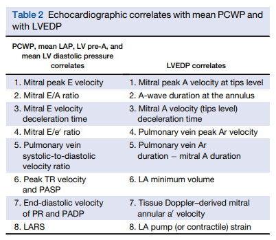
15.1 Mitraalisisäänvirtaukset (Mitral inflow)
Sinusrytmissä veri virtaa diastolessa vasempaan kammioon kahdessa aallossa:
- E-aallon nopeus kuvastaa LA:n ja LV:n välistä painegradienttia alkudiastolessa. Tämän takia E-aallon huippunopeus on hyvä vasemman eteisen paineiden (LAP) kuvastaja.
- HUOM! Jos tutkittava on eteisvärinässä, vasemmassa eteisessä ei ole kunnon synkronoitua supistelua vaan kaoottista värinää, jolloin A-aaltoa ei nähdä.
Mitraalisisäänvirtauksia mitataan apikaalisesta nelilokerokuvasta asettamalla Pulse Wave -dopplerin sample gate mitraaliläpän purjeiden kärkien maksimaalisen avautumiskohdan väliin. Sitten PW-nappia painamalla saa mitattua sisäänvirtauskäyrät.
Huomioi taas alla olevista kuvista, että ne ovat tyypilliseen tapaan kuvattu siten, että anturin nypy on potilaan vasemmalla -> sydän piirtyy A4C:ssä niin, että vasen puoli on oikealla.
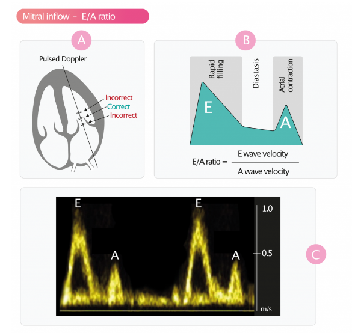
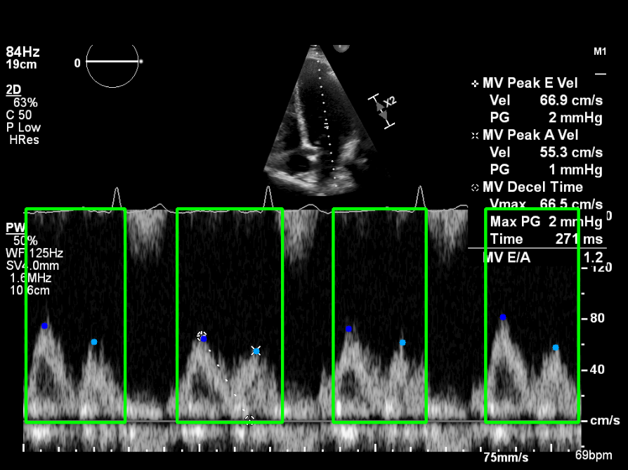
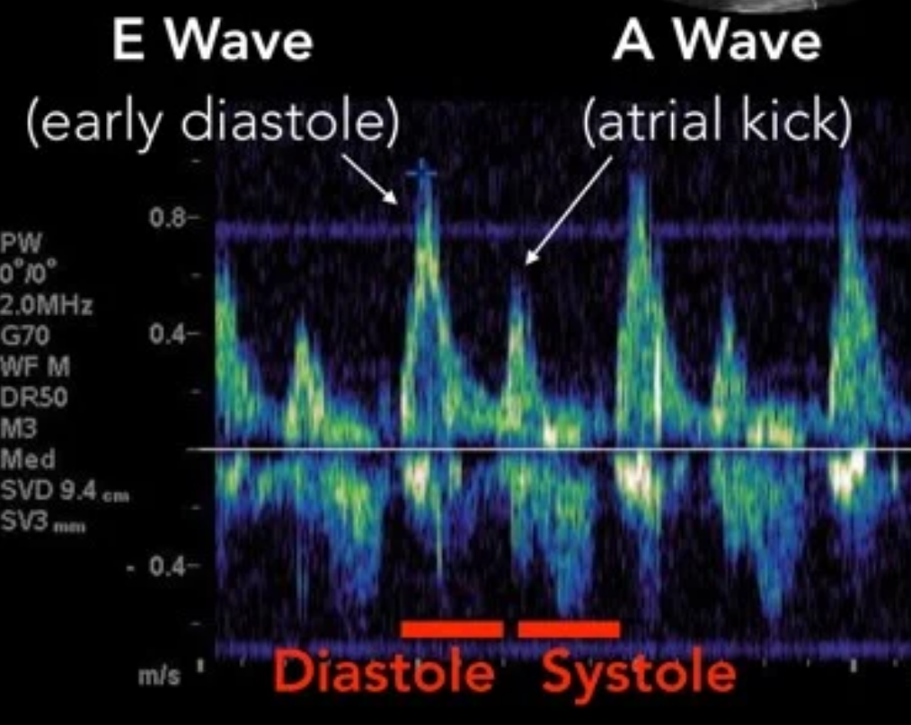
15.2 Kudosdoppler (TDI)
Perinteisellä dopplerilla (CW tai PW) tehdään mittauksia veren virtauksista sydämessä, kun taas kudosdopplerilla (tissue doppler imaging, TDI) sen sijaan tarkastellaan myokardiumin nopeuksia. Yksi tärkeä osa diastoliikasta onkin kammion relaksoitumisnopeus. Mitraalisisäänvirtaukset ovat herkkiä mm. preloadin muutoksille ja eivät täysin suoraan kuvasta vasemman kammion relaksoitumista. TDI taas on suora mittari vasemman kammion relaksaatiokyvystä ja kuuluukin diastoliikan perusmittauksiin.
Vasemman kammion diastoliikkaa arvioitaessa sample gate viedään apikaalisessa nelilokerokuvassa pallohiirellä lateraaliseen ja/tai septaaliseen mitraaliläpän annulukseen. UKG-laitteesta painetaan painiketta TDI ja heti perään painiketta PW; joissain laitteissa TDI aloittaa suoraan PW-mittauksen TDI-napin painalluksesta. Tavoite olisi, että kulma mittauslinjan ja annulaarisen liikkeen välillä olisi mahdollisimman samansuuntainen (n. 0-20 astetta yleensä hyvä).
- On kuitenkin hyvä tiedostaa, että on tilanteita, joissa kannattaa välttää toista puolta sen mekaanisen tai sähköisen häiriintymisen takia; lisää näistä vähän alempana sudenkuoppia käsittelevässä osiossa.
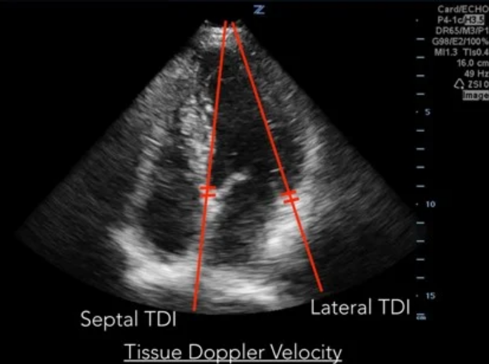
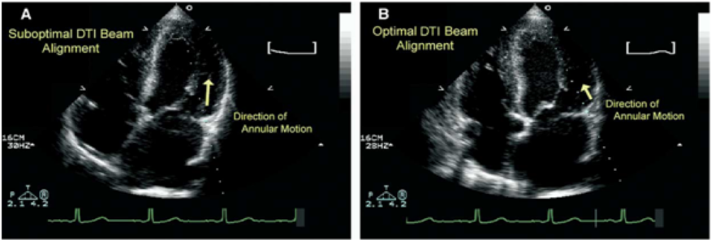
Täten tarkasteltuna nähdään taas mitraalisisäänvirtauksien tapaan tyypillisesti kaksi erillistä aaltoa, mutta tällä kertaa ikään kuin käänteisinä, alaspäin suuntautuvina. Näitä kutsutaan e’- ja a’-aalloiksi tässä yhteydessä (lausutaan englanniksi “e prime” ja “a prime”). Voidaan myös käyttää termejä Ea ja Aa – pieni a merkitsee annuluksesta tehttyjä mittauksia (jos olisi myokardiummittauksia, niin pientä m-kirjainta käytettäisiin).
- Kuten myös mitraalisisäänvirtauksissa, niin a’ katoaa, jos potilas on eteisvärinässä.
- A’:n mittauksia ei useimmiten suoriteta, koska niiden kliininen käyttöarvo on todella vähäinen
- Normaalisti mitraaliläpän lateraalisen annuluksen s’:n maksiminopeus on n. >8-10cm/s ja alentunut on <8cm/s.
- S’:n mittauksia käytetään kuitenkin aika harvoin vasemman kammion systolisen funktion arvioimisessa, mutta oikean kammion systoliikassa sitä hyödynnetään jokseenkin usein (lateral tricuspid annulus s’ velocity). Tästä lisää oikeaa kammiota käsittelevässä kappaleessa.
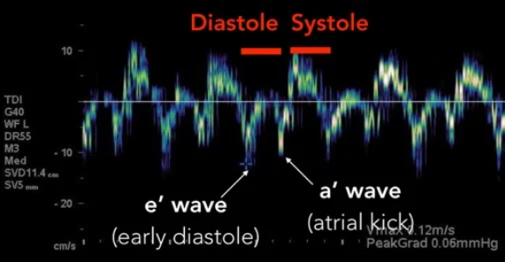
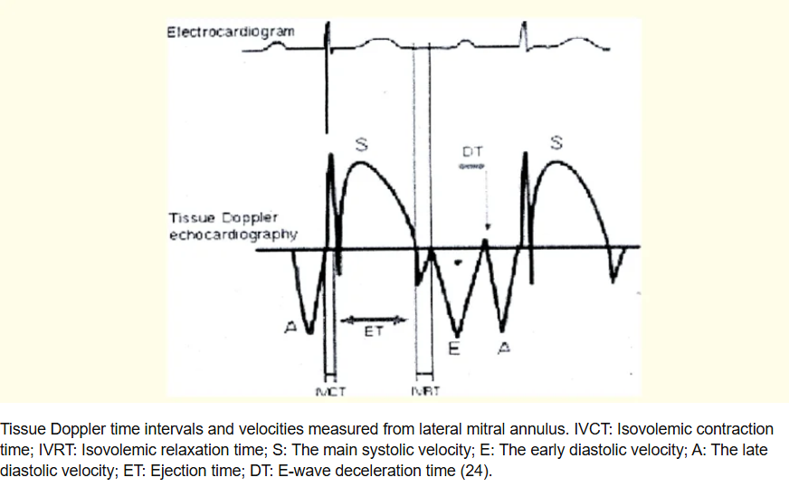
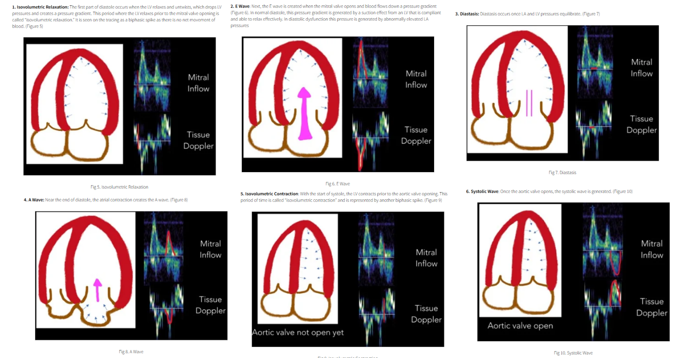
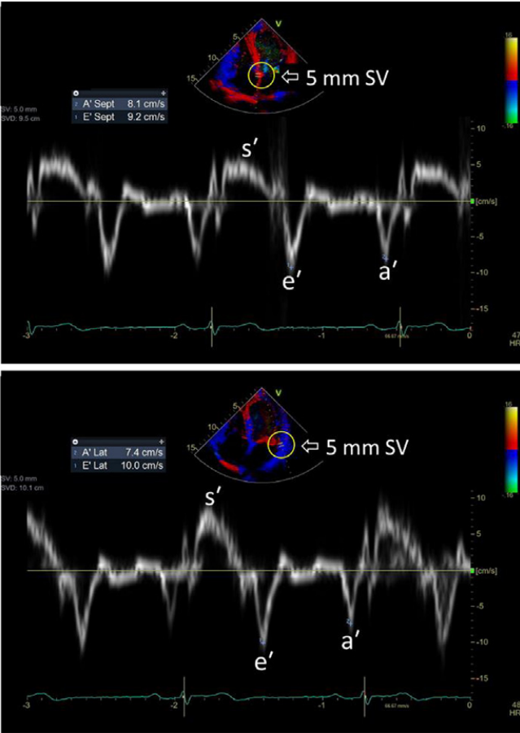
15.3 Tulkinta ja gradeeraus
Koska mitraalisisäänvirtaukset eivät ole suora relaksaation mittari (ovat vain epäsuora vasemman eteisen paineiden arviointityökalu), niin mittaukset tulisi periaatteessa aloittaa kudosdopplerista ja e’:n huippunopeudesta. Nykyisten ASE:n guidelinejen perusteella diastoliikan arvion ensimmäinen vaihe on osoittaa e’:n kautta hidastunut LV:n relaksaatio, jonka jälkeen tutkitaan, ovatko täyttöpaineet koholla mittaamalla E-aalto (ja siitä E/e’ -suhde) ja myös arvioidaan, onko kohonneet paineet heijastuneet jo sydämen oikealle puolellekin (trikuspidaalivuodon nopeus ja gradientti). Lopulta gradus määritetään täyttöpatternin perusteella. Tarvittaessa voidaan käyttää myös epäsuoria tukimittauksia, kuten keuhkolaskimovirtauksia (näistä lisää tämän kappaleen lopussa), vasemman eteisen tilavuutta (LAVi) tai IVRT:n kestoa. Myös jos on mahdollisuus strain-kuvantamiseen, niin sitä voi käyttää (LARS eli Left Atrial Reservoir Strain). Vielä harvinaisemmin käytettyjä vaihtoehtoisia tukimittauksia on myös olemassa; esimerkiksi mitraalisisäänvirtauksien L-aallon nopeus on mahdollinen mittari; L-aalto ≥50 cm/s osoittaa heikentynyttä LV:n relaksatiota ja kohonnutta vasemman eteisen painetta (LAP). Toinen mahdollinen mittaus on tutkia mitraalisisäänvirtaukset potilaan valsalvatessa; E/A-suhteen laskeminen vähintään 50% valsalvatessa on spesifistä kohonneelle LAP:lle. Nämä ja muitakin vaihtoehtoisia metodeita käydään läpi linkatussa guideline-pdf:ssä.
Käydään seuraavaksi läpi tyypillinen diastoliikan arvioimisen workflow vaiheittain. Käydään alla oleva gradeerausalgoritmi tarkemmin läpi tämän jälkeen.
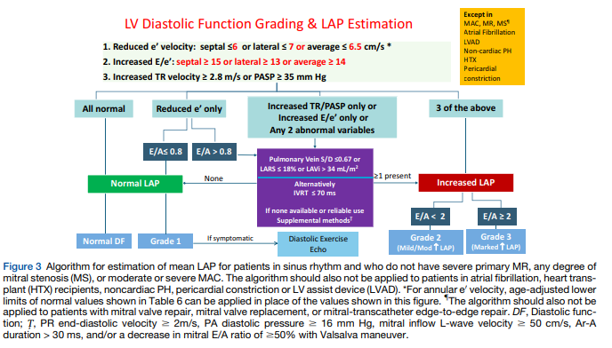
15.3.1 Vaihe 1 - e’ LV:n relaksaation markkerina
E’ eli kammion alkudiastolinen relaksaatio mitraaliläpän avautuessa on ehkä tärkein markkeri osoittamaan suoraan kammion relaksaatiokykyä, koska se kuvastaa itse lihaksen nopeutta eikä veren virtausnopeuksia, joihin voi vaikuttaa monet asiat. A’:n mittaaminen on yleensä hyödytöntä, joten sitä ei tarvitse rutiinisti ottaa tai lausua.
Kuten aikaisemmin mainittiin, niin e’:n yleisin mittauspaikka on lateraalisesti, mutta oikeaoppisesti se tulisi mitata sekä septaalisesti että lateraalisesti. E’-nopeuksille on saatavilla iän mukana muuttuvat viitearvot, mutta yleensä riittää, että muistaa ulkoa vain vanhusten (>65-vuotiaiden) patologiset rajat:
- Septaalinen e’ on yleensä lateraalista hieman pienempi, koska septaalinen annulus on enemmän ankkuroitu (esim. intervalvulaarinen fibroosa (anteriorisen mitraaliläpän purjeen ja aorttaläpän non-koronaarikuspin välinen avaskulaarinen sidukodskalvo)) verrattuna “vapaan seinämän” lateraaliseen annulukseen.
- Poikkeus säännölle on konstriktiivinen perikardiitti, jossa vapaa seinämä kalsifikoituu ja siten pääasiassa lateraalinen e’ hidastuu.
Vaikka e’ olisikin normaali, niin diastolista dysfunktiota ei ole poissuljettu, joten tulee jatkaa mittausten suorittamista. Vaikka e’-aalto on huomattavasti itsenäisempi kuin veren virtausnopeudet, sekin reagoi jossain määrin sydämen sisäisiin paineisiin ja absoluuttisia poissulkukriteereitä diastolisen vajaatoiminnan suhteen ei ole.
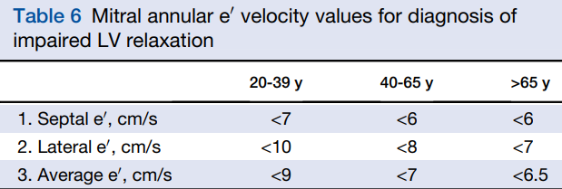
15.3.2 Vaihe 2 - E/e’ vasemman eteisen paineiden mittarina
Mitraalisisäänvirtauksista arvioidaan erityisesti E-aalto, E- ja A-aaltojen välinen suhde ja myös jo aikaisemmin mitatun e’:n kautta E/e’-suhde. Kone laskee E/A- ja E/e’-suhteet automaattisesti. Aloitetaan E/e’-suhteesta. Se voidaan laskea niin lateraalisen tai septaalisen e’:n kautta, mutta taas keskiarvo on paras.
E-aallon nopeus nousee vasemman eteisen paineiden noustessa, koska veri “räjähtää” ulos korkeapaineisesta eteisestä nopealla vauhdilla mitraaliläpän avautuessa. Näin voi käydä esimerkiksi juuri diastolisessa vajaatoiminnassa, mutta myös mm. nesteylimäärässä ilman vajaatoimintaakin. E-aalto voi myös olla nopea nuorilla urheilijoillakin, vaikka eteisen paineet eivät olisikaan koholla, koska vasen kammio on niin vieterimäinen, että se relaksoituu nopeasti ja imee eteisestä verta nopealla vauhdilla. Täten pelkästään E-aallon nopeudesta ei voi suoraan päätellä täyttöpaineiden koholla olemista.
E/e’-suhde auttaa tutkimaan, johtuuko nopeat mitraalivirtaukset enemmänkin diastolisesta dysfunktiosta vai jostain muusta. Suhde on patologinen, kun:
- Välillä 8-13 ollaan ns. “harmaalla alueella”, mutta < 8 suurella todennäköisyydellä viittaa normaaleihin täyttöpaineisiin.
E’-aallon hidastuessa suhde siis nousee ja tämä auttaa suhteuttamaan mitraalisisäänvirtauksen E-aallon nopeuden vasemman kammion relaksaatiotoimintaan. Verrataan kahta esimerkkitilannetta:
- Hänellä kuitenkin e’ on korkea esim. n. 15 cm/s, koska nuoren urheilijan lihas on tehokas vieteri. Tällöin E/e’-suhde on n. 6.7 (normaali, matala suhde) -> nopean E-aallon aiheutti terveen vasemman kammion imufunktio, ei korkea eteispaine.
- Hänellä kuitenkin e’ on matala esim. n. 5cm/s, koska sementtimäinen kammio ei veny nopeasti. Tällöin E/e’-suhde on 20 (koholla) -> nopean E-aallon voi päätellä johtuvan vasemman eteisen korkeista paineista vasemman eikä niinkään hyvästä imufunktiosta.
15.3.3 Vaihe 3 - E/A-suhde
Algoritmisesti E/A-suhteen katsominen kuuluu gradeeraukseen vasta myöhemmin, mutta oikeassa työjärjestyksessä se tulee mitattua jo tässä kohtaa. E-aallon huipun mittaamisen jälkeen otetaan siis samalla heti A-aallon huippu, jos se on nähtävillä. E- ja A-aaltojen maksiminopeuksien suhteesta (E/A) eli ns. täyttöpatternista voidaan päätellä vasemman eteisen painetilannetta ja vasemman kammion täyttöpaineita.
- Yleensä siis E-aalto on hieman isompi kuin A-aalto, mikä tarkoittaa, että suurin osa vasemman kammion täyttymisestä tapahtuu vasemman kammion relaksoitumisen takia ja pienempi osa myöhemmin eteissystolessa. Kuitenkin normaalitilanteessakin sallitaan A-aallon olevan hieman isompi kuin E-aalto (tämän takia normaaliväli menee alle 1:n).
- Ikääntyessä siis E/A-suhde alkaa ihan luonnollisesti tippumaan ja tämä ei sinänsä ole itsessään patologinen löydös, vaan on ns. “age-related diastolic change”, joka johtuu sydänlihaksen elastisiteetin vähentymisestä.
- Kammion relaksoitumisen (eli siis periaatteessa e’:n) hidastuessa kammio ei enää ime yhtä voimakkaasti verta vasemmasta eteisestä alkudiastolessa, jonka takia E-aallon huippunopeus laskee. Samalla A-aalto suurenee, kun vasemman kammion täyttymisen pitää nojata enemmän loppudiastoliseen eteissupistukseen. E/E’ suhde ei yleensä nouse vielä merkittävän patologiseksi (voi olla harmaalla alueella kylläkin, mutta yleensä E/e’ on alle 10).
- Jos E/A on muuten terveellä nuorella potilaalla <0.8-1, niin yksi yleinen syy on mm. hypovolemia. Tietysti myös nuorilla voi olla alkavaa diastolista dysfunktiota (esim. hypertrofinen kardiomyopatia tai aikainen hypertensio).
- Myös vanhuksella E/A alle 0.8 voi olla patologinen, jos muut löydökset viittaavat gradus I:tä pahempaan diastoliseen dysfunktioon; yleensä kylläkin näissä tapauksissa on joko gr II:n pseudonormalisaatiota tai gr III:n E/A-suhteen nousua.
- Vasen kammio siis jatkaa jäykistymistään ja tästä johtuen verta pakkautuu enemmän vasempaan eteiseen, mikä johtaa vasemman eteisen paineiden (LAP) nousuun. Kun mitraaliläppä sitten avautuu alkudiastolessa, niin LA:n korkeat paineet purkautuvat korkeagradienttisesti eli korkealla nopeudella vasempaan kammioon. Tämän takia E-aalto taas nousee ja E/A-suhde “normalisoituu”. Kyseessä ei kuitenkaan ole normaalitoimintainen sydän, joten täyttöpatternia kutsutaan “pseudonormaaliksi”.
- Suurimmalla osalla vanhuksista normaalilta näyttävä E/A-suhde ei oikeasti ole normaali. Pseudonormaalin ja normaalin täyttöpatternin erottamisessa auttaa mm. e’:n mittaaminen: E/e’ suhde on pseudonormaalissa tilanteessa yleensä patologisesti koholla tai harmaalla alueella toisin kuin täysin terveessä sydämessä.
- Nyt jo merkittävästi heikentynyt vasemman kammion relaksaatio johtaa merkittävästi suurentuneisiin vasemman eteisen paineisiin, jotka purkautuvat todella kovalla nopeudella vasempaan kammioon alkudiastolessa. Samalla A-aalto pienenee johtuen siitä, että vasen kammio täyttyy normaalia nopeammin – sen komplianssi on pieni ja voimakas E-aalto täyttää heikosti suurentuvan kammion nopeasti (tästä johtuen E-aallon hidastuvuusaika laskee todella pieneksi, koska vasen kammio ei pysty vastaanottamaan virtausta kovinkaan pitkään). Kun vasen eteinen yrittää vielä loppudiastolessa puristaa verta kammioon, niin kammio on jo jäykkä ja täynnä eikä vasen eteinen pysty ylittämään tätä painetta merkittävästi -> A-aallossa virtaava veren määrä laskee. Samalla kroonisessa tilanteessa eteisen pitkäaikaisesti korkea painetila on johtanut eteisen laajentumiseen ja väsymiseen, mikä johtaa suoraan lihastoiminnan alenemiseen.
- Lopputuloksena on siis normaalia nopeampi E-aalto ja samalla hitaampi A-aalto -> E/A-suhde nousee patologisen korkeaksi.
- On kuitenkin tiedostaa, että nuorilla terveillä potilailla E/A-suhde voi olla yli 2, koska vasen kammio relaksoituu niin tehokkaasti, että E-aalto on merkittävän nopea imufunktiosta johtuen ja A-aalto on pieni, koska kammio täyttyy jo niin hyvin alkudiastolessa, että eteissystoleen ei tarvitse nojata paljoakaan. Tässäkin tapauksessa erityisesti e’-nopeuksien arvioiminen auttaa erottamaan normaalin tilanteen patologisesta.
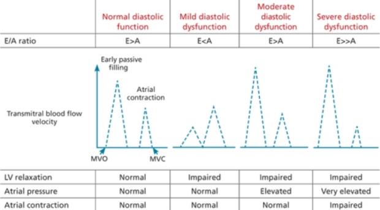
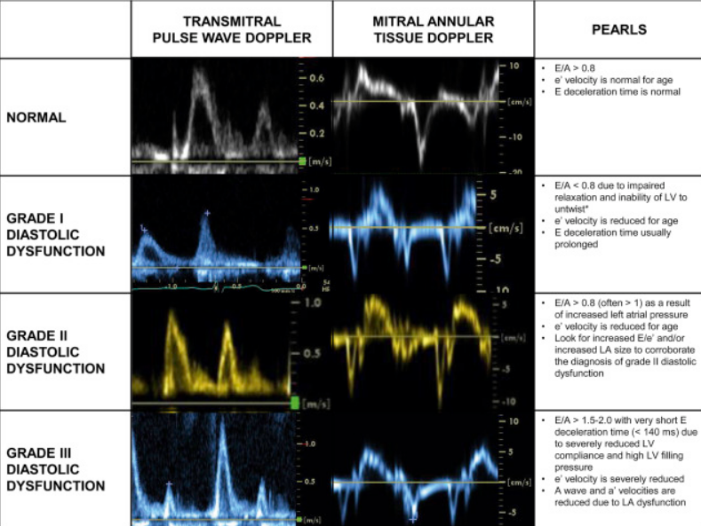
15.3.4 Vaihe 3.5 - E-aallon hidastuvuus
Kun on jo mitraalisisäänvirtauskäyrän kerännyt, niin samalla voi jaksaessaan mitata myös E-aallon hidastuvuuden (deceleration time, DT), vaikka se ei kuulukaan ASE:n diastoliikka-algoritmiin. Sitä voidaan kuitenkin käyttää tukevana arvona – varsinkin silloin kun E/A-suhdetta ei ole käytössä esim. eteisvärinästä johtuen (tosin tällöin DT voi vaihdella ja kannattaa ottaa keskiarvo monesta lyönnistä).
DT:n mittaaminen suoritetaan piirtämällä E-aallon laskevan puolen kulmakertoimen mukaisesti aallonkäyrän jatke niin, että se leikkaa peruslinjan. Aika E-aallon huipusta tähän leikkauskohtaan on DT.
DT:n kehittymistä voi verrata E/A-suhteeseen – se muuttuu ennustettavasti diastolisen dysfunktion laskiessa:
- Johtuu lievästi heikentyneestä relaksaatiosta – aktiivisen rentoutumisen hidastuessa sydänlihaksen kanssa kammioiden välisen paineen tasoittumisessa kestää pidempään
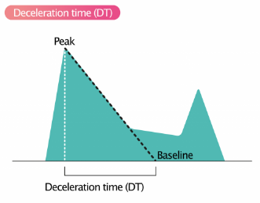
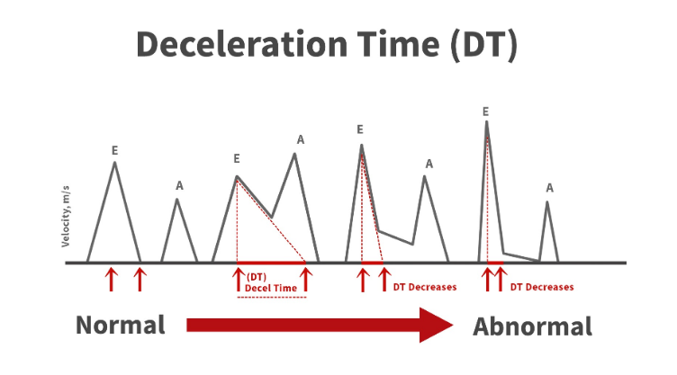
Samalla voi periaatteessa vielä mitata A-aallon keston (tätä käytetään Ar-A-keston laskemiseen, jos halutaan käyttää sitä diastoliikan arvioimisessa tietyillä erityisryhmillä (esim. merkittävä mitraalivuoto tai hypertrofinen kardiomyopatia)). Lisää tästä keuhkolaskimovirtausten yhteydessä hieman alempana.
15.3.5 Vaihe 4 - Trikuspidaalivuoto
Mitraalivirtauksien ja annuluksen kudosdopplerin tutkimisen jälkeen tulisi algoritmin mukaan tutkia trikuspidaalivuodon nopeuksia/gradienttia. Tarkoituksena on siis tutkia vasemman puolen diastolisen dysfunktion heijastumista sydämen oikealle puolelle:
- Ei kuitenkaan ole suora osoitus, koska mm. keuhkosairaudet (esim. COPD) voivat nostaa trikuspidaaligradienttia, vaikka sydämen vasen puoli olisi täysin terve (ns. pre-kapillaarinen pulmonaalihypertensio). Myös esim. harvinaisemmat syyt, kuten primaari trikuspidaalivuoto, vasemmalta-oikealle-shuntit, RVOT-obstruktiot tai pulmonaalistenoosi voivat olla syypäitä.
Gradientin voi ottaa kuvan mukaisesti esim. A4C:sta, mutta myös mm. PSAX:sta tai RV-inflow-ikkunasta.
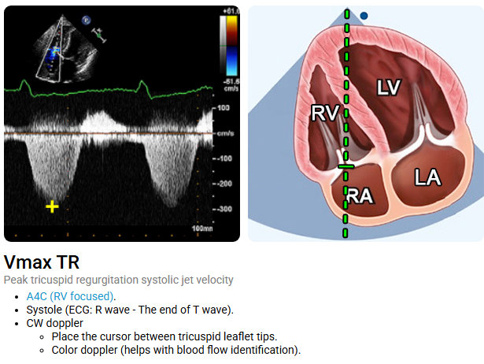
15.3.6 Vaihe 5 - Lisämittaukset
Algoritmin mukaan voidaan myös hyödyntää mm. vasemman eteisen tilavuutta, keuhkolaskimovirtauksia (erityisesti S/D-suhde, mutta myös Ar-A-duration on hyödyllinen) ja IVRT-kestoa (sekä myös strain-kuvantamista, mutta ei käsitellä sitä), jos gradeeraus ei ole ilman niitä selkeää. Näiden lisäksi on myös korvaavia mittareita, kuten L-aallon nopeus, pulmonaalivuodon loppudiastolinen nopeus ja E/A-suhteen muuttuminen valsalvatessa.
15.3.6.1 Vasemman eteisen tilavuus (LAVi)
Vasemman eteisen tilavuuden mittaaminen on käyty jo aikaisemmin tarkemmin läpi, mutta kertauksena: Kone laskee tilavuuden, kun on piirtänyt vasemman eteisen pinta-alan ja pitkittäisakselin pituuden niin apikaalisessa nelilokerokuvassa kuin kaksilokerokuvassa. Tilavuus sitten jaetaan potilaan kehon pinta-alalla (Body Surface Area, BSA), jotta saadaan suhteutettua eteisen koko potilaan kokoon. Tätä suhteutusta nimetään LAVi:ksi eli Left Atrial Volume index; kannattaa tosin huomata, että merkittävän obeeseilla potilailla LAVi voi olla pseudonormaali, jolloin usein suositellaan indeksoimista pituuden neliöön verrattuna.
Kuten aikaisemmassa kappaleessa selitettiin, niin vasen eteinen on sydämen “pitkä sokeri” eli kuvastaa pitkäkestoista paine- tai volyymivaikutusta vasemmalla puolella. Diastolisen dysfunktion ollessa pitkäkestoista, johtavat kohoavat täyttöpaineet ja veren pakkautuminen eteiseen hiljalleen eteisen remodelaatioon: venyttyminen ja laajentuminen → LAVi kasvaa. Suurentunut vasen eteinen ei kuitenkaan siis ole spesifinen diastoliselle dysfunktiolle (muita syitä on mm. mitraaliläppäviat, krooninen anemia, raskaus, hypertyreoosi, eteisvärinä, urheilijan sydän), joten se ei voi toimia ainoana osoituksena diastoliikan ongelmasta.
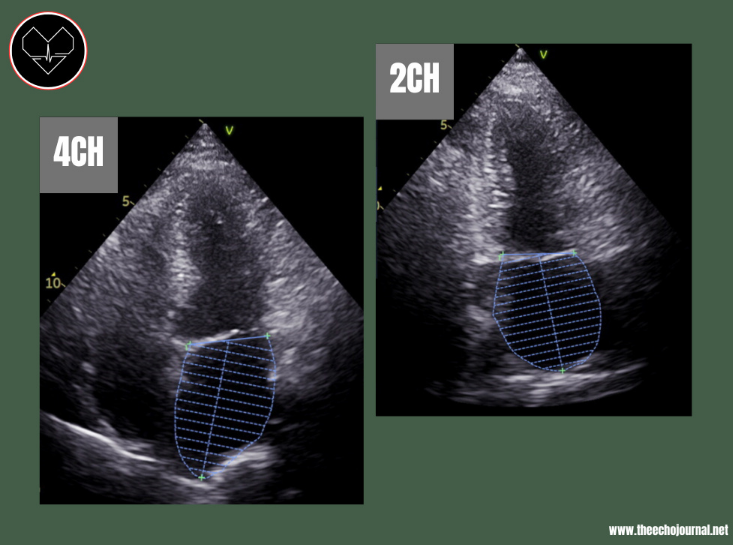
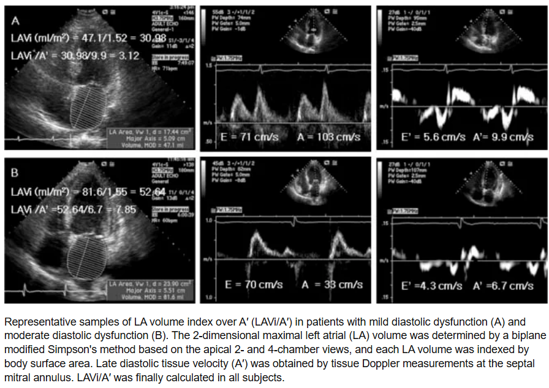
15.3.6.2 IVRT
IVRT eli isovolumetric relaxation time tarkoittaa lyhyttä ajanjaksoa aorttaläpän sulkeutumisen ja mitraaliläpän avautumisen välillä, jonka aikana kammio relaksoituu, mutta sen veritilavuus ei vielä muutu (isovolumetrinen; kts. ylempänä kuuden kuvan sarja diastoliikasta). Kammio vain avaa systolessa tapahtunutta kiertosupistustilaa. Tarkalla kuvantamisessa voitaisiin havaita, että kammion geometrinen sisätilavuus kasvaa pienesti, mutta koska mitraaliläppä on vielä kiinni, niin verivolyymi kammiossa ei muutu.
IVRT:n kesto määräytyy sen mukaan, kuinka nopeasti kammion paine putoaa eteisen paineen alapuolelle. Mitraaliläppä siis avautuu painegradientin suuntautuessa eteisestä kammioon ja IVRT:n määritelmä oli ajanjakso aorttaläpän sulkeutumisen ja mitraaliläpän avautumisen välillä → muutokset vasemman kammion relaksaatiossa ja eteisen paineissa vaikuttavat suoraan IVRT:n kestoon (kesto on suoraan riippuvainen LV:n relaksaationopeudesta ja käänteisesti riippuvainen LAP:sta).
IVRT voidaan mitata parilla eri tavalla. Klassinen ja yleisin on asettaa CW-leikkauslinja (tai monissa lähteissä myös PW-doppler käytössä (sample gate LVOT:n proksimaalipuolella), mutta ASE:n guidelineissa ohjeistetaan CW) apikaalisessa viisilokerokuvassa LVOT:n proksimaalipuolelle niin että saadaan kerättyä samalla aorttaan päin virtaava veri että mitraalisisäänvirtaus. Muodostuu käyrä, jossa näkyy anturia kohti virtaavat E- ja A-aallot sekä anturista poispäin virtaava aorttavirtaus. Caliperilla mitattuna IVRT on täten horisontaalinen etäisyys (eli ajallinen kesto) aorttavirtauksen loppumisen ja E-aallon alun välillä.
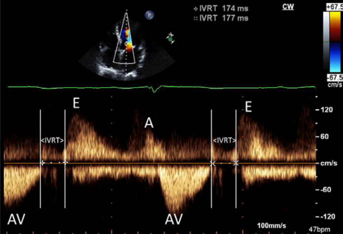
Mittauksen voi myös tehdä kudosdopplerilla (TDI) samoista käyristä, jotka otetaan muutenkin mitraaliannuluksen liikettä tutkiessa. Vaikka mitraaliläppä on vielä IVRT:n aikana kiinni (eli verta ei virtaa kammioon), niin kammion sisäinen paine laskee ja se muuttaa muotoaan systolisen kiertoliikkeen avautuessa. Tämä mekaaninen “pyyhkeen aukeaminen” ja muodonmuutos siirtää hiippaläpän rengasta, vaikka läppä itsessään on yhä kiinni. TDI-kursori havaitsee tämän liikkeen ja käyrällä voidaan nähdä lyhyt ja yleensä amplitudiltaan aika pieni piikki systolisen s’-aallon ja varhaisdiastolisen e’-aallon välissä; piikki on kudosdopplerilla kuvattuna nimetty IVRT’-aalloksi. Mittaus aloitetaan s’:n päättymisestä ja lopetetaan e’:n alkuun. Kudosdoppleri on varsin hyvä, koska se on teknisesti usein helpompi tallentaa selkeästi kuin kahden eri läpän virtausten yhteensovittaminen perinteisellä dopplerilla. Sitä ei kuitenkaan ole standardoitu diastoliikan gradeerauksessa eikä sitä mainita guidelineissa. IVRT’ on yleensä myös systeemisesti pidempikestoisempi kuin IVRT, koska sydänlihas on väistämättä hitaampi muuttamaan suuntia sen inertiasta johtuen kuin herkät painekontrolloidut läpät ja verivirtaukset.
Alla olevassa kuvassa IVCT on isovolumetric contraction time eli se aika mitraaliläpän sulkeutumisen ja aorttaläpän avautumisen välillä. Senkin mittaaminen voi joskus olla hyödyllistä, mutta se on taas systoliikan arvio. Sen yksi yleisimmistä käyttöaiheista on Myocardial Performance Indexin (MPI, Tein indeksi) laskeminen; MPI = (IVCT + IVRT) / Ejection time. MPI kuvastaa globaalia kammiotoimintaa. Normaali on pulssiaallolla mitattuna n. 0.30-0.50 ja yli 0.50 viittaa vahvasti vähintään keskivaikeaan myokardium dysfunktioon (0.40-0.49 on harmaa alue ja voi viitata myokardiumin dysfunktioon); kudosdopplerilla mitattuna normaali on vähän korkeampi n. 0.40-0.60. MPI:tä käytetään paljon esimerkiksi sikiön ekokardiografiassa ja aikuisilla joskus esim. amyloidoosissa ja dilatoivassa kardiomyopatiassa. Korkea MPI on voimakas aikaisen sydämen vajaatoiminnan ja kardiovaskulaarisen mortaliteetin ennustaja.
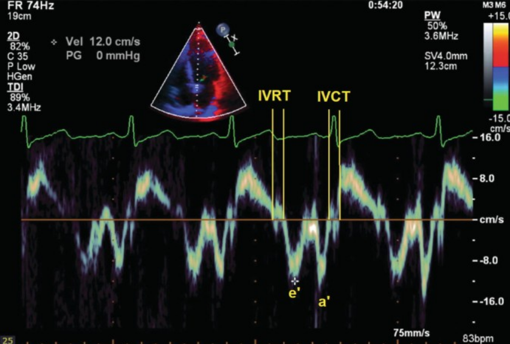
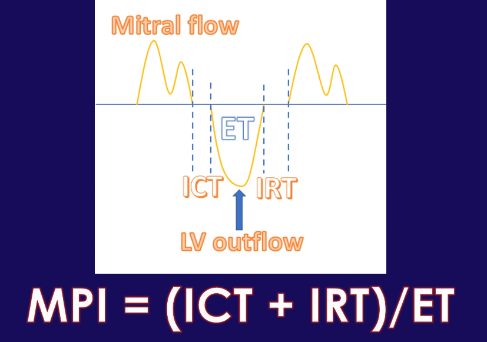
15.3.6.3 L-aalto
L-aalto on mitraalisisäänvirtauskäyrässä nähtävä keskidiastolinen nopeus, joka sijaitsee E-aallon jälkeen. Se kuvastaa jatkuvaa keuhkolaskimovirtausta vasemman eteisen läpi vasempaan kammioon nopean alkudiastolisen täyttymisen jälkeen (on siis E- ja A-aaltojen välissä → ns. trifaasinen mitraalivirtaus; normaalisti välissä on vähävirtauksista diastaasia).
L-aalto korostuu myokardiumin relaksaation hidastuessa ja vasemman eteisen paineiden (LAP) kohotessa. L-aallon nopeuden tulisi olla >20 cm/s, jotta se ajatellaan merkitykselliseksi.
- LA:n paineet siis taas nousevat ja LV:n paineet laskevat → mitraaliläpät taas avautuvat keskidiastolessa vahvemmin auki diastolisten paineiden “oskilloimisesta” johtuen ja syntyy keskidiastolinen L-aalto niin mitraalisisäänvirtauksissa kuin mitraalipurjeiden M-moodissa.
- L-aallon havaitseminen yleensä tehdään mitraalisisäänvirtauksista, mutta se on hyvä osata tunnistaa myös kudosdopplerista ja harvemmin myös mitraaliläpän M-moodista.
L-aalto ≥ 50 cm/s on ASE:n algoritmissa yksi mahdollisista korvaavista arvoista, joita voidaan käyttää gradeerauksessa, koska se toimii osoituksena kohonneista eteisen paineista ja merkitsee edennyttä diastolista dysfunktiota (vähintään gr II). L-aalto on siten myös prognostinen markkeri ja sen ilmentyminen diastolisessa dysfunktiossa ennustaa tulevia sairaalajaksoja.
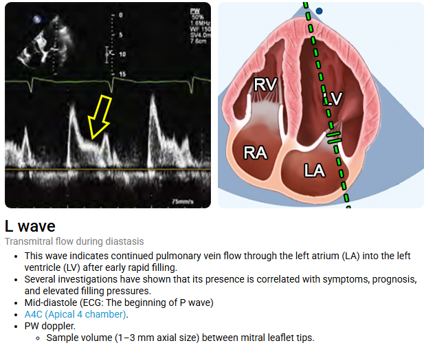
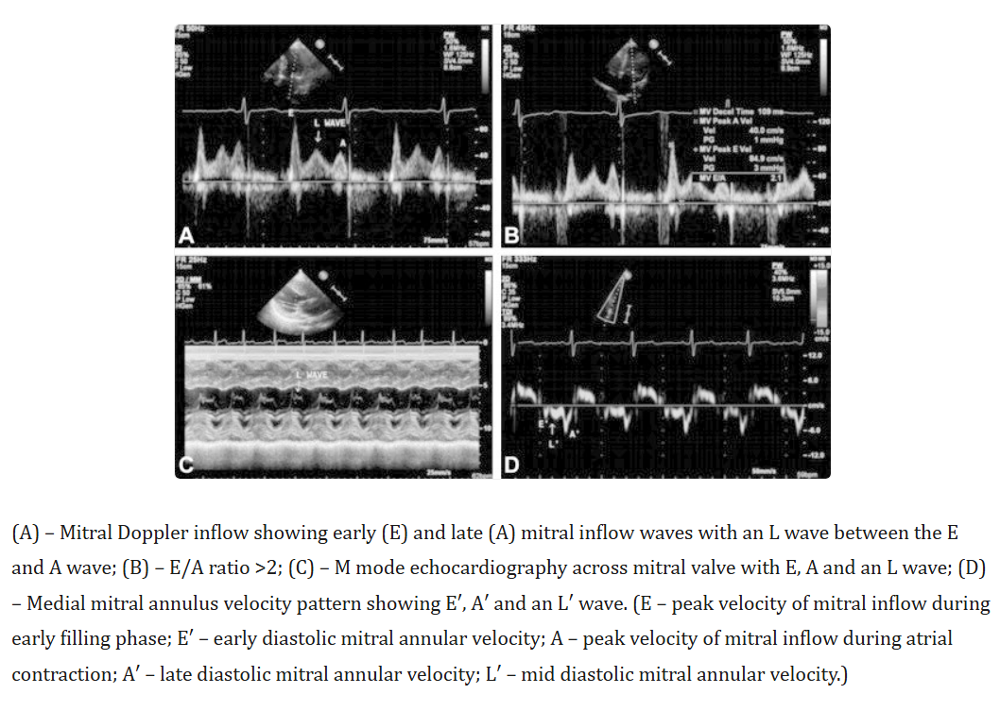
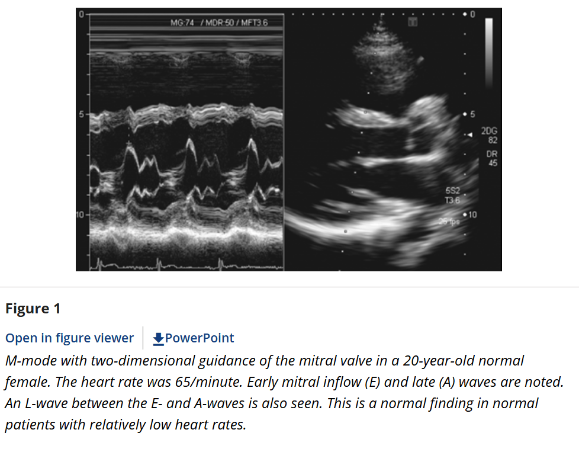
#### Valsalvaus ja E/A-suhdeValsalvan manööveri on tekniikka, jossa ilmaa puhalletaan syvän sisäänhengityksen jälkeen voimakkaasti ulos suljettuja hengitysteitä tai nenää ja suuta vasten (tällä tavalla esimerkiksi voi itse avat omat korvansa, jos ne ovat lukossa). Tämä stimuloi parasympaattista hermostoa sekä myös nostaa rintakehän sisäistä painetta voimakkaasti. Intratorakaalisen paineen nousu puristaa kasaan suuria laskimoita, jolloin laskimopaluu sydämeen preload vähenee. Sydämeen tulevan veren määrä siis vähenee, mikä laskee myös vasemman eteisen painetta. Eteisen paineiden tippuessa koska vasen kammio on jäykkä, veri ei enää virtaakaan sinne helposti diastolen alussa -> erityisesti E-aalto pienenee. Diastolen lopussa kammio nojaa enemmän eteissystoleen puskeakseen loput veret sisään -> A-aalto säilyy tai korostuu.
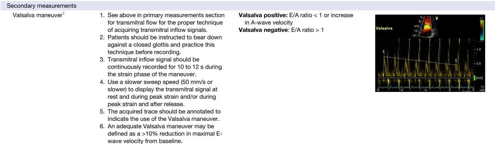
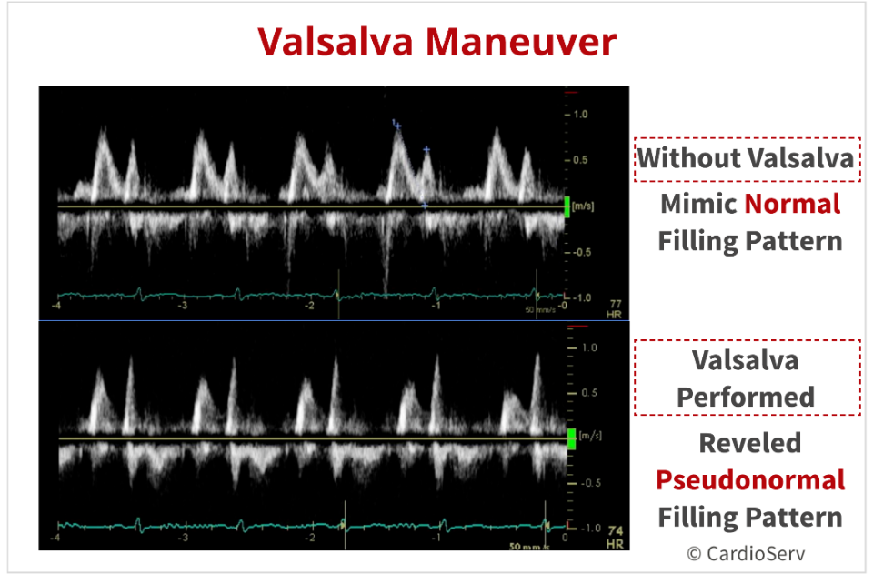
15.3.6.4 Pulmonaalivuoto
Pulmonaaliläpän vuodon loppudiastolista nopeutta voidaan käyttää osoittamaan keuhkovaltimoiden diastolista painetta. Bernoullin yhtälöstä päätelleen keuhkovaltimopaine diastolessa (PADP) on 4 x (loppudiastolinen nopeus)^2 + oikean eteisen paine (joka toimii oikean kammion loppudiastolisen paineen verrokkina). Oikean kammion paine (RAP) arvioidaa IVC:stä tuttuun tapaan.
Loppudiastolessa paineet tasoittuvat ja PADP on suunnilleen sama kuin keuhkohiussuonten kiilapaine ja tämä taas sama kuin vasemman eteisen paineet. Jos pulmonaalivuodon loppudiastolinen nopeus (PREDV) on koholla, niin myös vasemman eteisen paine on koholla. PREDV voidaan siis käyttää osoittamaan koholla olevat keuhkoverenkierron paineet ja siten myös epäsuorasti vasemman puolen täyttöpaineet, jos trikuspidaalivuodon nopeutta ei ole käytettävissä. Sama rajoite on kuitenkin tässä eli ei-sydänperäiset pulmonaalihypertension syyt tekevät arvosta korkean, vaikka vasemman puolen toiminta olisikin normaalia.
Rajana osoituksena kohonneesta LAP:sta (keuhkosairauden ulkopuolella) on PREDV ≥ 2 m/s tai PADP ≥ 16 mmHg.
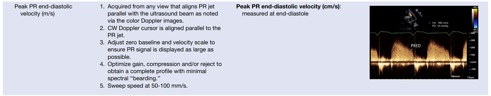
15.3.6.5 Keuhkolaskimovirtaukset
Keuhkolaskimovirtausten arvioimisen yksi indikaatioista on vasemman kammion diastolisen dysfunktion arvioiminen (ei tosin toimi tärkeimpänä tai ensisijaisena mittarina, vaan pikemminkin harvemmin käytettynä tukevana arviona). Toinen yleinen käyttö on esim. mitraalivuodon gradeeraus (siinäkin tukeva parametri). Koska diastoliikka tulee tässä oppaassa mitraalivuotoa ennen, niin käsitellään nyt keuhkolaskimovirtausten mittaaminen ja tulkitseminen. Jo aikaisemmin käytiin läpi keuhkolaskimoiden tunnistaminen ja löytäminen eri projektioista, mutta nyt voidaan tiivistää aihe siihen, että pitää osata löytää apikaalisesta nelilokeroprojektiosta (A4C) oikea ylempi keuhkolaskimo (RUPV; periaatteessa myös oikea alempi laskimokin käy, mutta RUPV on yleensä helpompi löytää). Siitä tyypillisimmin tehdään keuhkolaskimovirtausten mittaukset.
Tässä alla on esimerkki RUPV:n väridopplerista ja mittauspisteestä PW-dopplerin suhteen (oikeanpuoleisin video). Taas kannattaa muistaa, että Nyquistin rajan kannattaa useimmiten olla normaalia hieman matalampi johtuen keuhkolaskimoiden hitaammasta virtauksesta. Yleensä n. 40cm/s tai alle mahdollistaa tarkimman ja parhaimman virtausvisualisaation. Sample gate tulisi siis olla n. 0.5-2cm suonen sisällä eli siis proksimaalisesti sen junktiosta vasemman eteisen kanssa. Yritä suunnata UÄ-aallot mahdollisimman hyvin samansuuntaisiksi virtauksen kanssa.

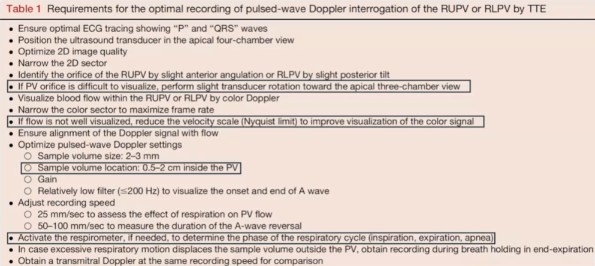
Tämä mittaus tuottaa pulssiaaltokäyrän, joka normaalitilanteessa koostuu kolmesta (tai neljästä) pääkomponentista: systoliset deflektiot (S-aalto; usein voi erottaa S1 ja S2) ja diastoliset deflektiot eli D-aalto ja Ar-aalto.
Ensiksi kannattaa tunnistaa Ar-aalto eli atrial reversal
Ar-aallon jälkeen seuraava positiivinen deflektio on S-aalto eli systolic wave, joka on usein kaksivaiheinen ja voidaan jakaa osiin S1 ja S2. Useimmiten (n.70%:lla ihmisistä; varsinkin terveillä nuorilla sekä myös nopeassa sykkeessä) kuitenkin aallot ovat assimiloituneet ja on todettavissa vain yksi S-aalto.
- Varsinkaan eteisvärinässä S1 ei ole havaittavissa epäkoordinoidun eteistoiminnan takia. S1-aaltoon vaikuttaa myös LA:n relaksaatiokyky (heikko relaksaatiokyky laskee S1-aaltoa) ja eteisen kontraktiliteetti (isompi kontraktiliteetti -> parempi täyttyminen supistumisen jälkeen (Frank-Starlingin laki).
- Oikean kammion toiminta täten voi vaikuttaa S2-aaltoon (RV stroke volumen laskiessa S2 laskee). Samoin LV:n pitkittäissupistuvuus vaikuttaa (vaikuttaa mitraaliannuluksen siirtymiseen) ja tietysti myös LA:n komplianssi vaikuttaa S2-aaltoon.
Systolisten aaltojen jälkeen seuraava käyrän huippu kuvastaa D-aaltoa eli diastolista aaltoa.
- Tietysti siihen taas vaikuttaa LV:n relaksaatiokyky ja LV:n komplianssi
On siis hyvä tiedostaa, että pulmonaalilaskimoiden virtauksiin vaikuttavat monet hemodynaamiset ja sydämen rakenteelliset tekijät.
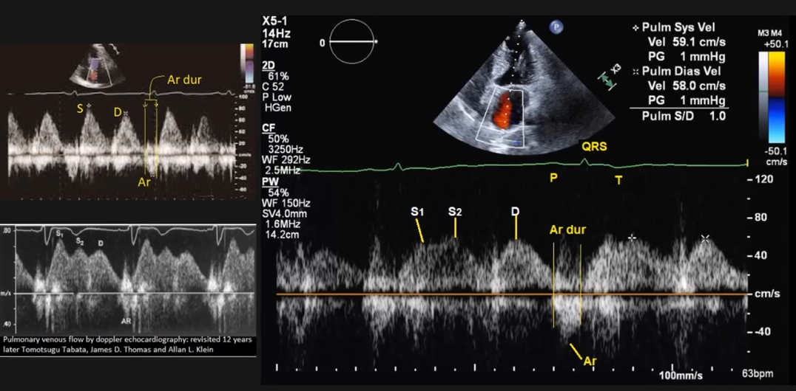
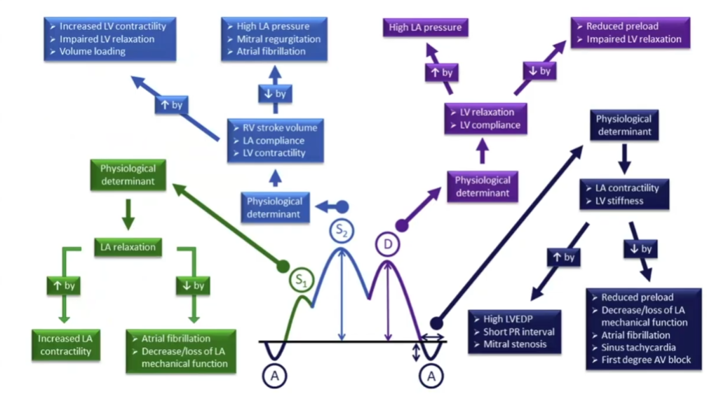
15.3.6.5.1 Keuhkolaskimovirtaukset diastoliikassa
Diastoliikassa keuhkolaskimovirtauksista useimmiten arvioidaan pääasiassa S/D-suhdetta. Yleensä normaaliksi suhteeksi ilmoitetaan, että S-aalto on suurempi (jos sekä S1 että S2 ovat nähtävissä, niin mitataan S2) tai yhtä suuri kuin D-aalto amplitudiltaan (S/D ≥ 1) eli normaalit täyttökuviot (filling patterns) ovat vahvemmin systolisia ja patologiset löydökset diastolisen vajaatoiminnan suhteen olisivat S/D < 1. Suhteen tulkitsemiseen kuitenkin vaikuttaa merkittävästi potilaan ikä ja kammion systolinen toiminta, joten yksittäistä “normaalia” arvoa ei voi suoraan antaa. Diastolisen dysfunktion gradeerausalgoritmissa käytetään rajaa S/D ≤ 0.67 osoittamaan kohonneita eteispaineita, mutta guidelinessa myös mainitaan, että jos LVEF on normaali, niin suhde voi hyvinkin olla >0.67, vaikka täyttöpaineet olisivatkin koholla -> “normaali” S/D-suhde ei poissulje diastolista dysfunktiota, jos systolinen funktio on normaali.
Lisäksi nuorilla (n. < 40v) ja terveillä potilailla voi S/D-suhde olla hyvinkin alle 1 ilman mitään ongelmaa sydämessä. Todella hyvä elastinen rekoili ja nopea vasemman kammion relaksaatio mahdollistaa sen, että aikaisin diastolessa tapahtuva vasemman kammion täyttyminen on hyvin tehokasta ja sydämen ei tarvitse turvautua eteissystoleen (mitraalivirtauksen A-aalto ja keuhkolaskimovirtausten Ar-aalto) kovinkaan paljoa. Tämä näkyy siis myös mitraalivirtausten E- ja A-aalloissa; A-aalto voi olla aika pieni ja E-aalto on suuri siihen verrattuna -> nuorilla ja urheilullisilla ihmisillä voi E/A-suhde olla hyvinkin yli 2, vaikka se on tyypillisen “normaalin” yläraja.
- Tämä ei ole diastolista vajaatoimintaa, vaan normaalia ikääntymistä. Periaatteessa tämä peilautuu gr 1 diastoliseksi dysfunktioksi - samoin kuten E/A-suhde alle 0.8 ikääntyessä
Jos ultraa >40-vuotiasta, niin voi yleensä ajatella normaalin S/D-suhteen olevan > 1. Tässä potilaskunnassa S/D < 1 on yleensä patologista (vaikka onkin samalla tasolla kuin terveillä nuorilla; tämä taas peilautuu gr 2-3 diastoliseen dysfunktioon ja E/A suhteen pseudonormalisaatioon) ja kuvastaa vasemman eteisen paineiden nousua. LA:n paineiden noustessa esim. juuri diastolisesta vajaatoiminnasta johtuen vähenee S-aallon nopeudet, koska kohonneet paineet eteisessä aiheuttavat resistenssin tulevaa keuhkolaskimovirtausta vastaan. Mitraaliläpän avautuessa diastolessa tämä korkea paine aiheuttaa nopean virtauksen ventrikkeliin (samalla periaatteella E-aalto nousee mitraalivirtauksia tutkiessa) ja siten myös tehokkaan samanaikaisen eteisen täyttymisen ja korkean D-aallon.
Pähkinänkuoressa voi siis ajatella keuhkolaskimovirtauksista näin: D-aalto käyttäytyy samalla tavalla kuin mitraalivirtauksen E-aalto eli se kasvaa ja terävöityy diastolisen vajaatoiminnan edetessä -> E/A-suhde nousee ja S/D-suhde laskee.
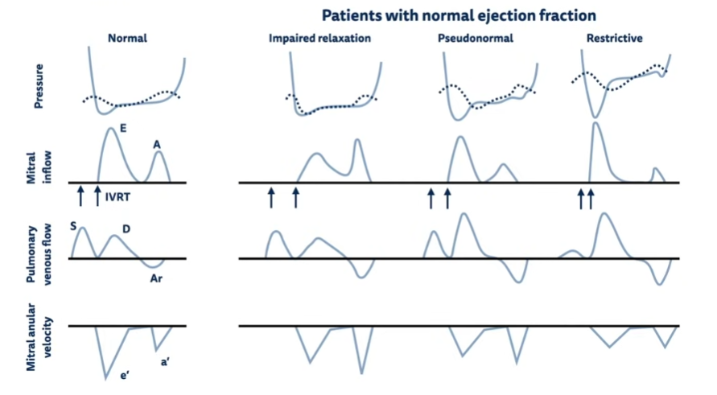
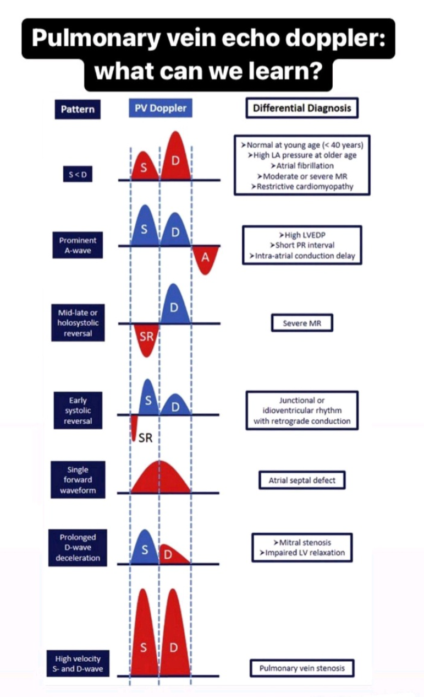
Yksi toinen mittari S/D-suhteen lisäksi on ns. Ar-A-kesto eli Ar-aallon kerton ja transmitraalisen A-aallon keston erotus. Jos Ar-duration - A-duration on ≥ 30 ms, niin se viittaa kohonneeseen vasemman kammion loppudiastoliseen paineeseen (LVEDP).
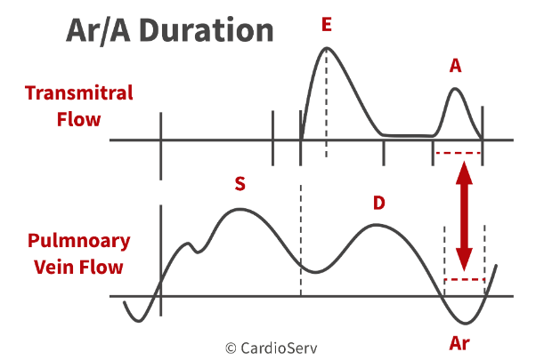
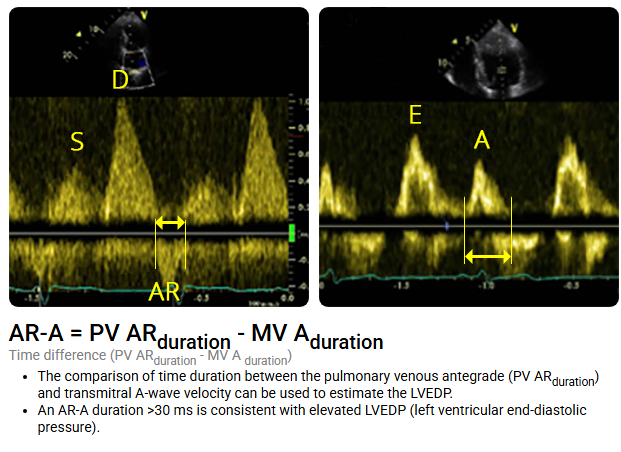
15.3.7 Vaihe 6 - Gradeeraus
On aika laittaa kaikki mittaukset yhteen ja määrittää diastolisen dysfunktion aste (gradus). Gradeeraukseen on laadittu monia ohjeita ja algoritmeja, mutta opetetaan tässä jo aikaisemmin vilautettu ASE:n guidelineissa esitetty algoritmi.
Algoritmi siis alkaa annulaarisen e’-nopeuden, E/e’-suhteen ja keuhkovaltimopaineiden (PASP) / trikuspidaalivuodon (TR) huippunopeuden arvioilla. E’-nopeudet siis kuvastavat vasemman kammion relaksoitumiskykyä suoraan, kun taas E/e’-suhde ja PASP/TR kuvastavat vasemman eteisen paineita. Jos kaikki kolme ovat normaaleja, niin kyseessä on normaali diastolinen funktio. Jos kaikki kolme ovat epänormaaleja, niin kyseessä on diastolinen dysfunktio ja kohonneet vasemman eteisen paineet, jolloin gradus on vähintään 2.
Jos yllä mainituista kolmesta vain e’ on alentunut, niin E/A-suhteen kautta voidaan määrittää, onko potilaalla normaali LAP vai kohonnut LAP. Jos E/A on normaaliin ikääntymiseen/alkavaan diastoliseen dysfunktioon sopivasti ≤ 0.8, niin kyseessä on normaalipaineinen tilanne ja gradus on 1.
Jos taas E/A > 0.8, niin siirrytään algoritmin liilaan boksiin, jossa hyödynnetään lisämittareita päättämään, ovatko eteispaineet koholla. Tähän boksiin siirrytään myös siinä tilanteessa, jos jokin muu kolmesta pääarvosta (eli E/e’ tai TR/PASP) on poikkeava tai yhteensä kaksi pääarvoista ovat poikkeavat.
Jos LAP:n ajatellaan olevan koholla, niin E/A-suhteen perusteella jaetaan dysfunktio lievään/keskivaikeaan (gr 2) ja huomattavaan (gr 3). Lyhyesti sanottuna gradeeraus siis perustuu siihen, että osoitetaan jollain parametrilla vasemman eteisen paineiden nousu ja vielä E/A-suhteen perusteella jaetaan kohonneet paineet kohtalaisesti kohonneisiin (gr 2) ja huomattavasti kohonneisiin (gr 3).
Bonus: Jos gradus on 1, mutta potilas on selkeästi oireinen (erityisesti hengenahdistus rasituksessa) eikä selkeää muuta selitystä löydy oireille, niin seuraava diagnostinen selvittely olisi diastoliset stressitestit. Jopa 50%:lla HFpEF-potilaista on normaalit täyttöpaineet levossa, mutta ne nousevat nopeasti rasituksessa tai jopa jalkoja nostaessa (jalkojen nostaminen lisää preloadia). Normaalisti e’ nousee n. 3-5 cm/s rasituksessa, mutta diastolisessa dysfunktiossa relaksaatio nopeutuu vain vähän tai ei ollenkaan. E-aalto kuitenkin nousee täyttöpaineiden kohotessa, jolloin E/e’-suhde nousee.
15.3.8 Vaihe 7 - Poikkeustilanteiden huomioiminen
Diastoliikan arviointia voi häiritä todella monet asiat. Algoritmissa onkin mainittu seuraavat erityisryhmät, joissa normaali gradeeraus ei täysin päde:
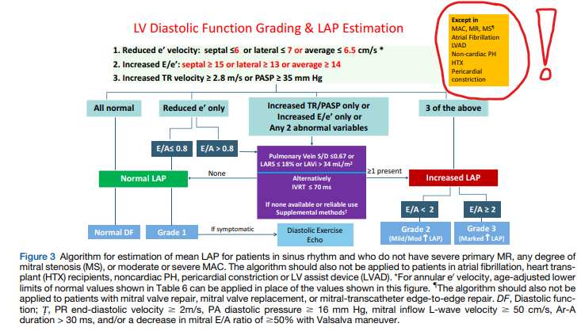
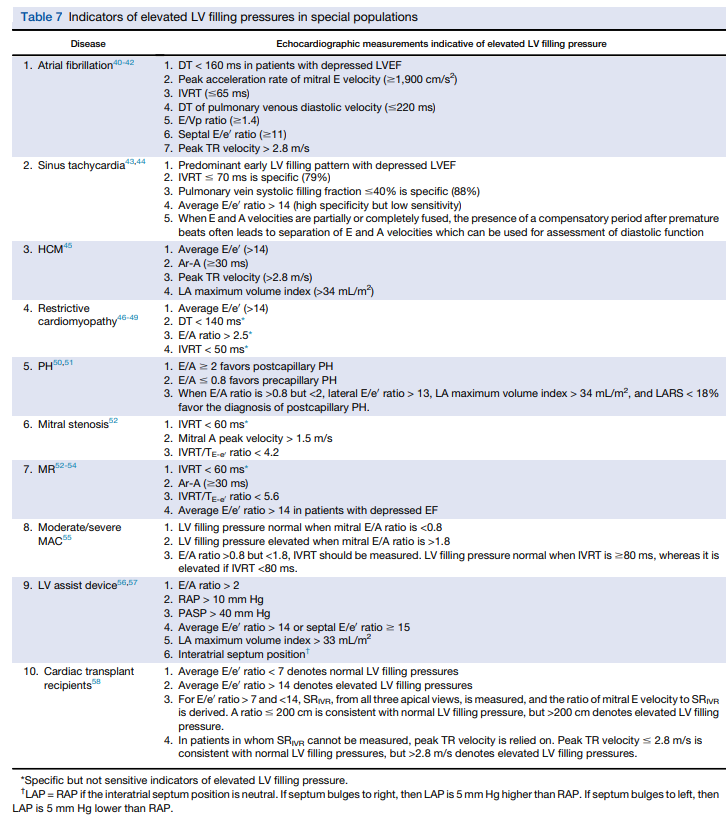
15.3.8.1 Mitraaliläpän ongelmat
Koska suurin osa perinteisistä diastolisen toiminnan mittareista perustuvat veren virtaukseen vasemmasta eteisestä vasempaan kammioon sekä itse läppärenkaan joustavaan liikkeeseen, mikä tahansa mekaaninen vika läpässä vääristää näitä tuloksia.
15.3.8.1.1 Mitraalistenoosi (MS)
Mitraalistenoosissa ahtaan reiän läpi puristuva veri aiheuttaa erittäin nopeavirtauksisen E-aallon ja tästä johtuen E-aaltoon perustuvat arvot (E/A-suhde ja E/e’) eivät kerro diastoliikasta eivätkä ole siten hyödyllisiä. Guidelineissa ehdotetaan yhtenä diastoliikkaa arvioivana arvona E-aallon ja annulaaristen e’-nopeuksien välistä aikaintervallia, mutta suurimmalla osalla koneista näiden mittaaminen samanaikaisesti ei ole mahdollista -> mitraalistenoosissa huomio kannattaa kiinnittää diastoliikan tarkemman gradeerauksen sijaan ahtauman asteen arviointiin ja sen aiheuttamaan oikean puolen rasitukseen.
15.3.8.1.2 Mitraalivuoto (MR)
Mitraalivuodossa (varsinkin keskivaikea ja vaikea) normaali diastoliikan algoritmi ei täysin toimi, koska MR pumppaa verta takaisin vasempaan eteiseen (LA). Kun mitraaliläppä aukeaa diastolessa, tämä ylimääräinen verimassa ryöpsähtää takaisin kammioon. Tämä aiheuttaa suuren E-aallon (ja myös keuhkolaskimovirtausten S/D-suhteen laskun) -> E/A-suhteeseen (tai S/D-suhteeseen) ei voi siis luottaa diastoliikan mittarina. E/e’-suhdetta voi kyllä käyttää varovaisesti, jos potilaalla on alentunut EF. Primaarissa mitraalivuodossa ja normaalissa ejektiofraktiossa E/e’-suhde ei korreloi yhtä luotettavasti eteispaineiden kanssa (tosin joissain tutkimuksissa on osoitettu merkittäväkin suhde).
E-aaltoon perustuvien mittausten ongelmien takia kannattaa perustaa arvio (ainakin primaarivuotoisessa normaalissa EF:ssa) vahvemmin niihin mittareihin, joita MR ei pysty hämäämään yhtä vahvasti. Yksi parhaista ja luotettavimmista merkeistä on Ar-A-kesto, joka jo käsiteltiin keuhkolaskimovirtausten yhteydessä.
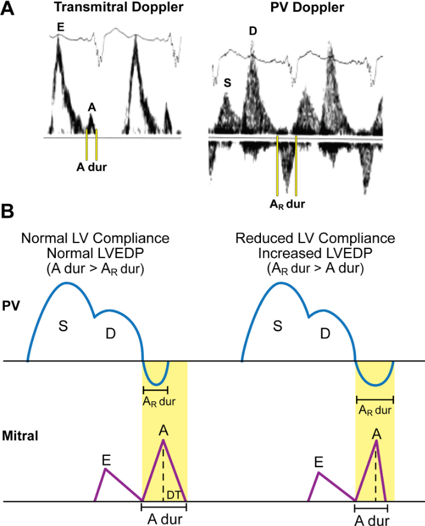
15.3.8.1.3 Mitraaliannuluksen kalsifikaatio (MAC)
Mitraaliläppärenkaan kalsifikaatio viittaa kalkin (ja lipidien) kertymistä annuluksen fibroosaan (itse endoteeli on tervettä annuluksen päällä; tämä erottaa MAC:n mitraalipurjeiden kalkkeutumisesta). Annuluksen kalkkeutumista voidaan nähdä jopa 35%:lla vanhuksista ja on yhteydessä mm. hypertensioon, aorttastenosiin, sepelvaltimotautiin ja krooniseen munuaisten vajaatoimintaan. Pelkkä MAC ei välttämättä aiheuta itse mitraaliläpän stenoosia, mutta voi joskus aiheuttaa oireetonta ja lievää mitraalivuotoa. Vaikka vuotoa tai stenoosia ei olisikaan, niin MAC kuitenkin vaikuttaa mittauksiin erityisesti e’-aallon eli annuluksen nopeuksien suhteen. Koska kalkkeutunut kudos ei jousta, e’-nopeus putoaa merkittävästi, vaikka itse kammion lihas olisi terve ja rentoutuisi normaalisti. Kun e’ on pieni, E/e’-suhde nousee virheellisen korkeaksi.
Tutkimusdata on vähäistä, mutta LV:n täyttöpaineet ja LAP ovat yleensä normaalit MAC-potilailla, kun E/A on < 0.8 ja taas koholla, kun E/A on > 1.8. Jos E/A on välillä 0.8-1.8, niin päätös täyttöpaineista tehdään yleensä IVRT:n perusteella.
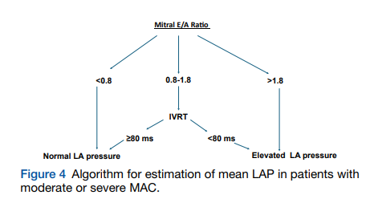
#### PulmonaalihypertensioEi-sydänperäiset pulmonaalihypertension syyt (WHO-ryhmät 1 ja 3-5) häiritsevät diastoliikan arviointia verrattuna pulmonaalihypertensioon, joka johtuu sydämen vasemman puolen ongelmasta (WHO-ryhmä 2).
Pulmonaalihypertensio johtaa kohonneisiin oikean kammion systolisiin ja diastolisiin paineisiin ja siten voi aiheuttaa trikuspidaalivuodon pahenemista sekä septumin suoristumista (“septal flattening”). Tästä johtuen TR:n nopeutta ei voida käyttää yhtä luotettavana mittarina ja E/e’-suhde tulisi mitata vain lateraalisesti (>13 viittaa kohonneisiin vasemman puolen paineisiin ja <8 taas normaaleihin) eikä septaalisesti tai näiden keskiarvona.
Suositeltu algoritmi perustuu E/A- ja E/lat e’-suhteeseen; kts. alla (LARS on myös mainittu, mutta se ei yleensä ole saatavilla).
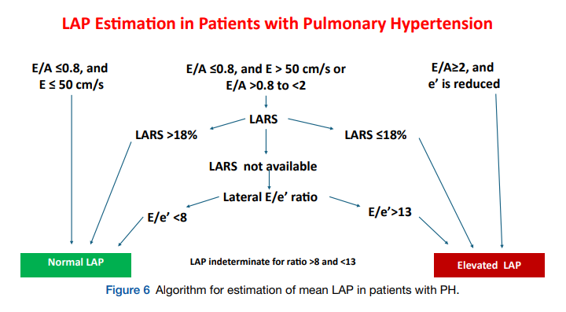
15.3.8.2 Perikardiaalinen konstriktio
Perikardiaalinen konstriktio (konstriktiivinen perikardiitti) on tila, jossa sydänpussi on paksuuntunut (normaalin paksuinen ei poissulje), arpeutunut tai kalkkeutunut, mikä estää sydäntä laajenemasta normaalisti diastolen (lepovaiheen) aikana ilman, että itse sydänlihas olisi viallinen. Vaikka konstriktio voi kehittyä minkä tahansa perikardiitin ja sen jälkitilan seurauksena, yleisimmät syyt ovat:
- Hyvä tärppi tietää tästä on se, että ureemisessa perikardiitissa ei yleensä ilmene muiden akuuttien perikardiittien tapaan klassisia EKG-löydöksiä, kuten laajoja ST-nousuja tai PR-segmentin laskuja.
Konstriktiossa sydämen diastolinen toimintahäiriö ei siis johdu itse sydänlihaksen jäykkyydestä, vaan sydäntä ympäröivästä jäykästä “panssarista”. Lihaksen ulkopuolinen konstriktio muuttaa hemodynamiikkaa kahdella merkittävällä tavalla:
- Kammioiden välinen riippuvuus tarkoittaa sitä, että toisen kammion muoto, tilavuus ja paine vaikuttavat suoraan toisen kammion toimintaan. Terveessä sydämessä tämä riippuvuus on vähäistä, koska sydänpussi joustaa ja antaa tilaa kammioiden laajentua ulospäin.
- Ulkopuolisessa konstriktiossa sydän on kuin lukittu kiinteään laatikkoon ja sydämen kokonaistilavuus on tarkkaan rajoitettu eikä sydän pysty laajentumaan ulospäin normaalisti. Jos toinen kammio haluaa ottaa vastaan enemmän verta ja laajentua diastolen aikana, se ei voi tehdä sitä laajenemalla ulospäin – sen on “varastettava” tilaa toiselta kammiolta.
- Koska ulkoseinät ovat jäykän kuoren kahleissa, ainoa sydämen sisällä oleva rakenne, joka voi liikkua ja antaa periksi kammioiden täyttyessä, on kammioväliseinä. Septumista tulee ikään kuin liikkuva väliseinä kahden huoneen välillä: jos toista huonetta laajennetaan, toinen kapenee väkisin.
- Tämä reaktio korostuu voimakkaimmin hengityksen myötä. Sisäänhengityksessä rintakehän sisäinen paine laskee ja tämä imee enemmän verta kehon suurista laskimoista oikeaan eteiseen ja yhä oikeaan kammioon. Oikean kammion nouseva paine työntää kammioväliseinämää vasemman kammion puolelle ja vasen kammio menee lyttyyn. Siksi vasen kammio pystyy ottamaan vastaan paljon vähemmän verta, mikä näkyy echossa mitraalivirtauksen (erityisesti E-aallon) laskuna.
- Uloshengityksen aikana ilmiö kääntyy päinvastaiseksi: oikean kammion täyttyminen vähenee laskimopaluun vähentyessä ja samaan aikaan keuhkoista puristuu verta vasempaan eteiseen ja vasempaan kammioon. Vasemman kammion paineiden noustessa se työntää septumia taas oikean kammion puolelle. Vasemman kammion täyttymiset paranevat hetkellisesti ja E-aalto nousee.
- Normaalisti hengityksen aiheuttamat rintakehän sisäiset paineenmuutokset välittyvät sellaisenaan sekä keuhkoverisuoniin että kaikkiin sydänlokeroihin. Konstriktiossa jäykkä sydänpussi toimii eristeenä, joka estää näiden painemuutosten välittymisen sydämen sisälle, kun taas rintakehässä sydämen ulkopuolella olevat suonet reagoivat paineeseen normaalisti. Tämäkin muutos siten näkyy hengityksen mukaan vaihtelevina doppleri-virtauksina samoin kuten kammioiden välisen riippuvuuden korostuminen.
- Sisäänhengitys siis laskee keuhkolaskimoiden painetta intratorakaalisen alipaineen kautta. veri ei halua virrata matalamman paineen keuhkoista korkeamman paineen sydämeen ja E-aallon huippunopeus laskee sisäänhengityksessä.
- Uloshengitys taas nostaa keuhkolaskimoiden painetta ja siten parantaa virtausta vasemmalle puolelle sydäntä -> E-aallon huippunopeus nousee sisäänhengityksessä.
- Fysiologiset muutokset yhdistettynä voidaan luoda seuraava kriteeri: mitraalivirtausten laskeminen >25% inspiraation myötä viittaa konstriktioon (samoilla periaatteilla trikuspidaaliläpän sisäänvirtauksen huippuaallon nouseminen >40% inspiraatiossa on positiivinen löydös).
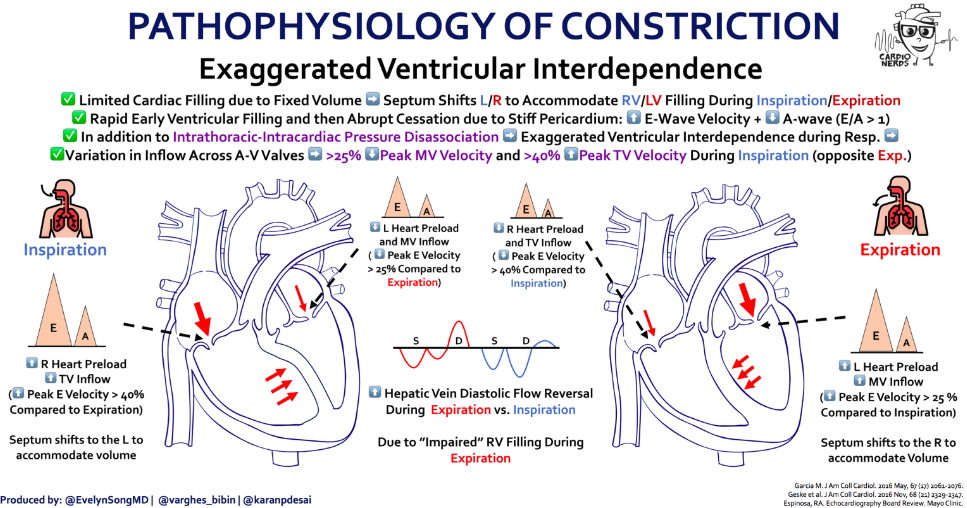
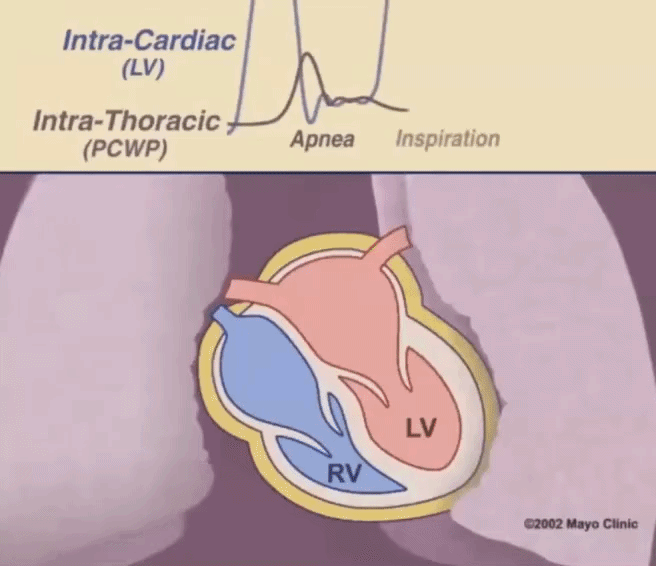
Kuten yllä olevasta patofysiologiaa selittävästi gifistä näkyy, niin septum heiluu sydämen syklissä normaalia enemmän. Tämän “septal bounce”-löydöksen voi helposti sekoittaa dyssynkroniaan, mutta se johtuu tässä tapauksessa ventrikulaarisesta interdependenssistä. Alkudiastolessa siis yleensä nähdään septumin siirtyminen vasempaan kammioon ja tätä seuraa pompahtaminen takaisin. Tämä on selkeintä ensimmäisessä sydänlyönnissä inspiriumin alettua.
Jos PLAX-ikkunassa laittaisi M-moodikursorin septumin läpi, niin voisi nähdä ns. “shudder sign:n” eli oskilloivan septumin liikkeen.
Yksi mahdollinen lisälöydös on varsinkin PSAX-ikkunassa nähtävä posteriorisen seinämän M-moodin tasoittuminen (“posterior wall flattening”). Normaalisti siis diastolessa vasemman kammion täyttyessä kaikki seinämät liikkuvat ulospäib, joten M-moodissa nähdään alaspäin viettävä posteriorisen seinämän tallenne. Konstriktiivisessa perikardiitissa jäykkä perikardium estää tätä liikettä ja nähdään diastolisen osuuden aikana tasainen eli vaakasuora takaseinämän M-moodikäyrä.
Tietysti 2D-kuvasta voidaan usein myös nähdä paksuuntunut perikardium, mutta transtorakaalisen echon luotettavuus tämän tunnistamisessa ei ole täydellinen. Perikardiumin paksuuntuminen ei myöskään ole diagnostinen kriteeri konstriktiiviselle perikardiitille – jos se kuitenkin halutaan osoittaa, niin MRI tai TT ovat parhaimpia sen osoittamiseksi. Paksuuntunut perikardium voi kuitenkin olla läsnä ilman konstriktiivisia piirteitä.
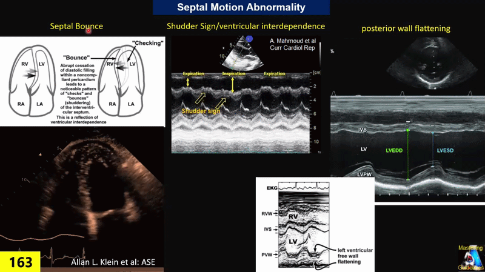
Toinen yleinen löydös perikardiaalisessa konstriktiossa on ns. annulus reversus joka tarkoittaa, että mediaalinen e′ > lateraalinen e′. Normaalitilanteessahan kammion vapaaseen seinämään liittyvä lateraalinen annulus on hieman nopeampi kuin jäykempään kammioväliseinämään kiinnittyvä septaalinen annulus. Poikkeus tähän sääntöön on perikardiaalinen konstriktio, jossa septumin liike on suhteellisen vapaata verrattuna jäykän sydänpussin rajoittamaan lateraaliseinämään. Septaalisen annuluksen liike voi jopa olla ylikorostunutta.
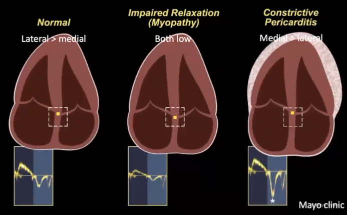
Vielä yksi yleinen varsinkin varmentavana tutkimuksena käytettävä mittaus on maskalaskimovirtaukset, joissa voidaan nähdä loppudiastolisten virtausten lisääntynyttä ekspiratorista kääntymistä. Maksalaskimovirtauksia käsitellään sydämen oikean puolen kattavassa kappaleessa enemmän.
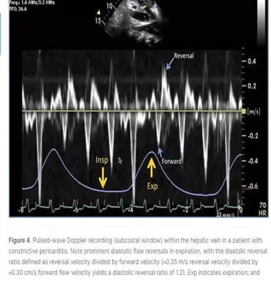
Jos UKG on selvästi konstriktiivinen, niin ei tarvita lisäkuvantamisia diagnoosin asettamiseksi. Erotus restriktiivisen (jäykkä sydänlihas) ja konstriktiivisen tilanteen välillä on tärkeää, koska niiden hoito erooa merkittävästi. Sydämen konstriktion oireet saadaan lievissä tapauksissa hallituksi diureeteilla, mutta lopullinen hoito on periaatteessa aina sydänpussin mahdollisimman laaja resektio. Perikardiektomia tulisi tehdä varhain, sillä pitkälle edenneissä tapauksissa resektio voi olla teknisesti hankala, epikardiaalisia muutoksia on runsaammin ja myös sydänlihas on voinut fibrotisoitua, mikä heikentää kammioiden toimintaa ja lisää leikkauskomplikaatioita. Leikkauskuolleisuus sydänpussin resektiossa on nykyisinkin huomattava, 5–10 %.
Restriktiivinen kardiomyopatia (syitä mm. idiopaattinen, amyloidoosi, sarkoidoosi, hemokromatoosi, Fabryn tauti, familiaaliset geenivirheet) on sydänlihaksen sisäinen ongelma, jonka takia hoito ei voi olla operatiivinen. Hoito perustuu lääkkeisiin (esim. varovainen nesteenpoisto, amyloidoosin täsmähoidot) tai viimeisenä vaihtoehtona sydänsiirtoon.
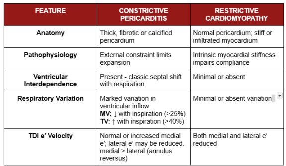
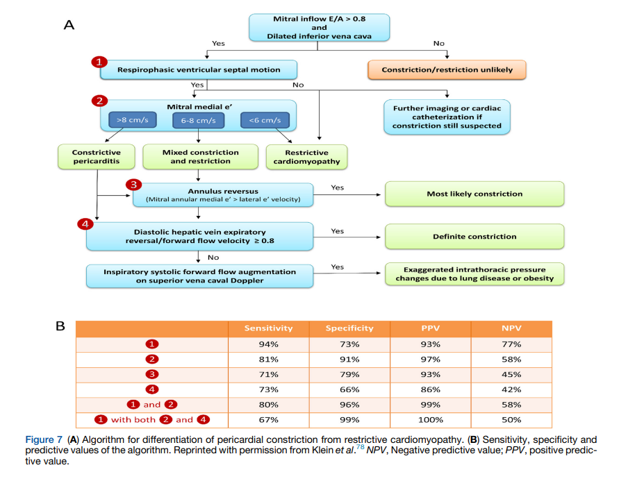
15.3.8.3 Eteisvärinä
Eteisvärinä on yksi yleisimmistä diastoliikan arviota häiritsevistä tekijöistä ja sen esiintyvyys on itse asiassa koholla diastolisessa dysfunktiossa ja HFpEF:ssä.
Tärkein huomio eteisvärinän yhteydessä on se, että ei ole synkronoitua eteissystolea, jonka seurauksena A-aaltoa ei ole nähtävissä. Eteisvärinässä todetaan siis mitraalisisäänvirtauksissa vain epäsäännöllisesti esiintyviä E-aaltoja. Tästä johtuen E/A-suhdetta ei voida laskea ja tarkempi gradeeraus kolmeen gradukseen ei ole mahdollista – käytännössä siis eteisvärinässä diastoliikan gradeeraus jakautuu kahteen: täyttöpaineet normaalit / täyttöpaineet koholla.
Johtuen myös epäsäännöllisen epäsäännöllisesti rytmistä kammion täyttyminen sydänsyklien välillä vaihtelee ja E-aaltojen amplitudi vaihtelee. Samaa ilmenee myös kudosdopplerissa. Tämän takia eteisvärinässä on järkevää ottaa monia arvoja ja laskea niistä keskiarvo. E/e’-suhteiden laskemisessa parasta olisi käyttää dual-doppleria ja mitata molemmat samaan aikaan samasta syklistä, mutta tällaista teknologiaa ei yleensä ole saatavilla.
Tärkeimmät mittarit on mainittu alla olevassa algoritmissa. E/e’-suhteessa on mainittu vain septaalinen e’, koska lateraalinen seinämä on vapaaliikkeisempi ja eteisvärinän aiheuttaman mekaanisen sekasorron vuoksi lateraalisen seinämän liikkeen vaihtelu vääristää E/e’-suhdetta herkemmin, jolloin se saattaa aliarvioida täyttymispaineiden nousua.
Yksi kvalitatiivinen lisämittari on E-aaltojen nopeuden vaihtelevuuden (beat-to-beat variability) tarkastelu. Nopeusvariabiliteetti vähenee täyttöpaineiden noustessa, mikä johtuu siitä, että kun potilaalla on vaikea diastolinen dysfunktio ja korkeat täyttöpaineet, vasemman eteisen paine (LAP) on jatkuvasti erittäin korkea. Kun mitraaliläppä aukeaa diastolen alussa, eteisen ja kammion välinen painegradientti on iso R-R-välin pituudesta riippumatta. Tämä jatkuva paine-ero pakottaa veren virtaamaan kammioon maksimaalisella nopeudella joka ikisellä lyönnillä, mikä häivyttää sykevaihtelun tuoman normaalin fysiologisen variaation.
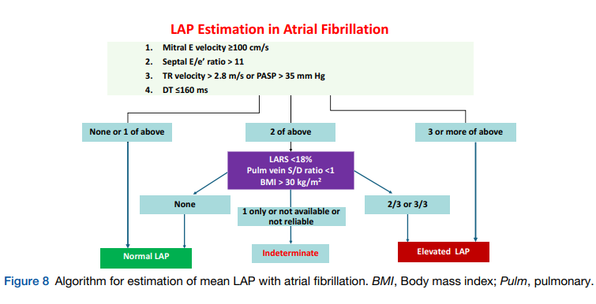
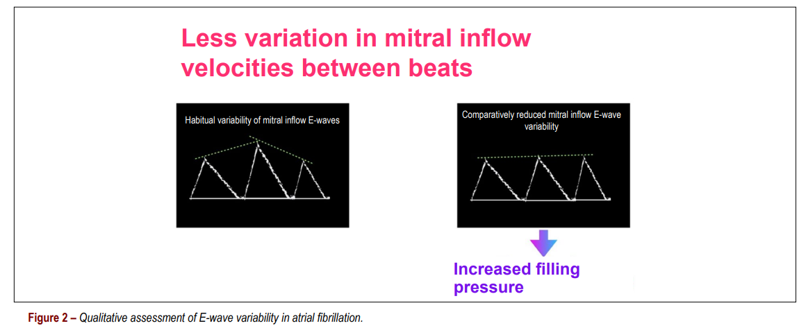
15.4 Lausunto
Liian usein vajaatoimintaepäilyssä keskitytään liikaa systoliseen puoleen. Olen jopa nähnyt lausuntoja päivystyksestä osastolle tulleilta potilailta, joissa sanotaan luokkaa “ei nyt lähdetty yön pikkutunneilla arvioimaan diastoliikkaa” ja jätetty sydämen suhteen arvio vain siihen, että todettu systolinen funktio normaaliksi ja potilaan hengenahdistus hieman epäselväksi. Ja vaikka systolinen funktio olisikin heikentynyt, niin diastolinen funktio (ja mm. myös oikean kammion funktio, joka on myös usein unohdettu mittauksissa) on itsenäinen ennustetekijä.
Diastoliikkaa ei tulisi pelätä tai kokea, että se on liian monimutkaista ja aikaa vievää. Jos vain ymmärtää gradeerauksen periaatteet ja sen mitä eri mittauksilla haetaan, niin arvioinnista tulee helppoa. Kaikkiin kattaviin UKG-lausuntoihin tulisi kuulua arvio diastolisesta funktiosta ja täyttöpaineista ja sitä kautta diastoliikan gradeeraus luokkiin normaali, gr 1, gr 2 (LAP lievästi tai kohtalaisesti koholla) ja gr 3 (LAP huomattavasti koholla). Jos tarkkaa gradusta on mahdotonta selvittää (esim. eteisvärinässä, kun E/A-suhdetta ei voida määrittää), niin täyttöpaineet tulisi ilmoittaa tarkkuudella normaali/koholla. Kehitys edelliseen ultraan tulisi aina mahdollisuuksien mukaan myös arvioida.
Lausuntoon sisällytettävät arvot ovat yleisimmin vähintään mitraalisisäänvirtausnopeudet, annulaariset e’-nopeudet, trikuspidaalivuodon huippunopeus/gradientti, E/A-suhde, E/avg e’-suhde (tai E/lat’ tai E/sep e’ jos vain toinen kerätään). Jos näiden perusteella gradeeraus on selvä, niin ei sinänsä tarvitse muuta, mutta jos gradeerausalgoritmia seuraten on mitattu myös esim. keuhkolaskimoiden S/D-suhde, A-aallon kesto, keuhkolaskimovirtauksen Ar-kesto ja/tai IVRT niin myös nämä tulisi ilmoittaa ja ilmoittaa mitä niistä on päätelty LAP:n ja diastoliikan graduksen suhteen.
Tyypillinen diastoliikan osuuden esimerkkilausunto potilaasta, jolla gr 3 diastolinen dysfunktio voisi esimerkiksi olla seuraavanlainen:
15.5 HFpEF
Sydämen vajaatoiminta jaetaan ejektiofraktion mukaan kolmeen pääryhmään:
- Periaatteessa on vielä olemassa ns. HFimpEF (heart failure with improved ejection fraction), jos EF on joskus ollut alle 40%, mutta kontrolliultrissa se on parantunut yli 40%:iin.
- HFpEF on nousussa ja käsittää tällä hetkellä yli 50% kaikista sydämen vajaatoimintatapauksista. Nousun syy on monitekijäinen ja liittyy erityisesti ikääntyvään väestöön, jossa on runsaasti altistavia komorbiditeettejä, kuten hypertensio, diabetes, obesiteetti yms.
Vaikka EF otettiin nyt heti puheeksi, niin kuin systoliikassa että diastoliikassakin tulee muistaa yksi tärkeä asia: diagnoosi sydämen vajaatoiminnasta ei perustu pelkästään echolaitteen ruudulla näkyviin arvoihin. Sydämen vajaatoiminta on oireyhtymä, joka vaatii vajaatoiminnalle tyypillisiä oireita ja/tai löydöksiä sen lisäksi että on osoitus sydämen rakenteellisesta tai toiminnallisesta poikkeavuudesta.
Sydämen vajaatoimintaepäilyssä tulisi siis ensin arvioida sopivatko oireet tai kliiniset löydökset vajaatoimintaan. Sen jälkeen usein arvioidaan, ovatko natriureettisten peptidien (proBNP) pitoisuudet suurentuneet (NT-proBNP < 125 ng/l sulkee kroonisessa tapauksessa (akuutissa < 300 ja eteisvärinässä < 365) sydämen vajaatoiminnan pois n. 94%:n herkkyydellä, kun taas > 2 000 ng/l tarkoittaa melko suurella todennäköisyydellä sydämen vajaatoimintaa – välissä on harmaa alue; kannattaa huomioida rasvakudos hajottaa natriureettisia peptidejä ja proBNP-arvot voivat olla hämäävän normaaleja tai vain lievästi koholla liikalihavilla) ja miltä EKG näyttää (EKG on harvoin normaali sydämen vajaatoiminnassa; matala proBNP ja sen rinnalla normaali EKG poissulkee sydämen vajaatoiminnan korkealla luotettavuudella (negatiivinen ennustearvo on noin 98–99 %)) tai voidaan siirtyä jopa suoraan ultraäänitutkimukseen, jolla varmistetaan vajaatoiminnan diagnoosi ja saadaan pääteltyä vajaatoiminnan etiologia.
- Vaihe A = Riski sairastua sydämen vajaatoimintaan, mutta ei rakenteellisia tai toiminnallisia muutoksia sydämessä. Ei sydämen vajaatoimintaan liittyviä oireita.
- Vaihe C = Oireinen sydämen vajaatoiminta. Oireita ja löydöksiä, jotka johtuvat sydämen toiminnan häiriintymisestä. Vaiheeseen liittyy poikkeava hemodynamiikka, ja natriureettisten peptidien pitoisuus on selvästi suurentunut. Hoidon myötä oireet ja löydökset voivat väistyä, mutta manifesti sydämen vajaatoiminta pysyy vaiheessa C (tai etenee vaiheeseen D)
- Vaihe D = Vaikea-asteinen sydämen vajaatoiminta. Tilaa kuvastavat vaikeat sydämen vajaatoimintaoireet, toistuvat sairaalahoitojaksot ja vajaatoimintaan liittyvät muiden elinten (munuaiset, keuhkot, maksa, ääreisverenkierto) kuormitusmuutokset.
- Vaiheessa A tavoite on hoitaa vajaatoiminnan riskitekijöitä. Vaiheessa B tavoite on lisäksi hoitaa rakenteellista sydänsairautta ja näin estää vajaatoiminnan kehittyminen. Vaiheissa C ja D tavoite on lievittää oireita ja vähentää (sairastavuutta) sairaalahoidon tarvetta ja kuolleisuutta.
- Vaiheessa B voidaan guidelinejen mukaan aloittaa ACEi ja beetasalpaaja, jos EF on ≤ 40% (eivät ole ennustelääkkeitä HFpEF:ssä); SGLT2i ei vielä ole virallisesti suositeltu ilman samaan aikaan olevaa diabetesta.
- Vaiheessa C ja D tulisi käyttää guidelinejen mukaisia ennustelääkkeitä (näistä lisää kohta).
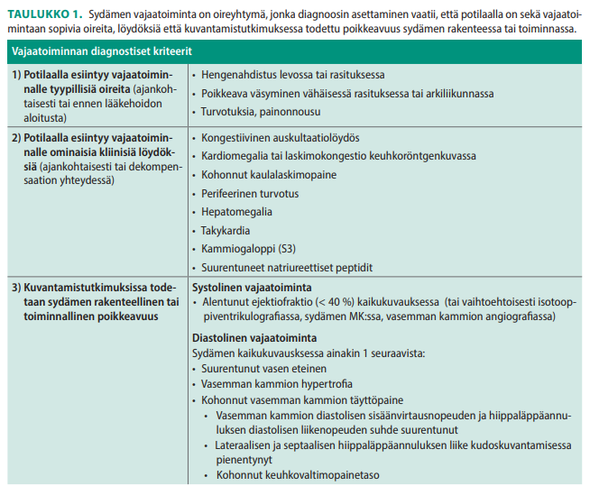
HFpEF:n diagnostiikkaa auttamaan on rakennettu H2FPEF-laskuri, jota voi käyttää kvantifoimaan HFpEF:n todennäköisyyttä ultraäänilöydöksistä ja kliinisistä/anamnestisistä piirteistä. Tulos ≥ 4 pistettä oireisella potilaalla viittaa diastoliseen vajaatoimintaan ja yli 7 pistettä on jo yli 95%:n todennäköisyydellä HFpEF. On myös esitetty ns. HFA-PEFF-score ja siihen perustuva algoritmi.
Nämä voivat olla apuna tarvittaessa, mutta periaatteessa siis HFpEF:n UÄ-diagnoosi perustuu siihen, että poissuljetaan matala ejektiofraktio sekä osoitetaan kohonneet vasemman eteisen paineet (tarvittaessa stressiecholla). Periaatteessa mm. primääreistä läppävioista (esim. mitraalivuoto) johtuvat sydämen vajaatoiminnat myös tippuvat HFpEF:n alle, koska sen määritelmä on vain, että on sydämen vajaatoiminta normaalilla ejektiofraktiolla. Kuitenkin tällaisten hoito usein eroaa verrattuna pelkästään diastolisesta dysfunktiosta johtuvaan sydämen vajaatoimintaan.
15.5.1 HFpEF:n hoito
Kuten suurin osa todennäköisesti muistaa, niin sydämen vajaatoiminnan hoito eroaa sen mukaan, mikä potilaan ejektiofraktio on. HFrEF:lle on ollut jo pitkään käytössä monia ennustelääkkeitä, mutta HFmrEF:n ja HFpEF:n ennustehoito on ollut vähäisempää. Nykyään niillekkin kuitenkin löytyy hyvä lääke.
- ACE:n estäjän (enalapriili, lisinopriili, ramipriili tai toissijaisesti ATR-salpaaja; jos ACEi/ATR ei riitä ja potilas oireinen, niin ARNIa (sakubitriili-valsartaani) voi miettiä niiden tilalla)
- Beetasalpaajan (bisoprololi, karvediloli, metoprololi)
- Mineralokortikoidireseptorin salpaaja eli MRA (spironolaktoni, eplerenoni, finerenoni)
- SGLT2:n estäjä (dapagliflotsiini, empagliflotsiini)
- Simppelisti: SGLT2i aloitetaan kaikille vajaatoimintapotilaille riippumatta ejektiofraktiosta (vasta-aiheisia aloittaa (mutta ei jatkaa), kun GFR <20-25)
- Muilla ennustelääkkeillä (ACEi/MRA/beetasalpaaja) ei siis ole havaittu samaa vaikutusta kuolleisuuteen kuin HFrEF:ssä (esim. ACE:n estäjillä ei vaikutusta kuolleisuuteen HFpEF:ssa, vaikka vähentäisivätkin oireita). HFmrEF:ssa on nykyään jonkin verran näyttöä näiden lääkkeiden ennustevaikutuksesta ja niiden aloitusta suositellaan luokan II näytön tasoisesti, joten niiden käyttö on lisääntynyt HFmrEF-tasoisen (EF 41-49%) vajaatoiminnan hoidossa.
- FINERARTS-HF-trial (esitettiin ESC:n kongressissa 2024) on tosin osoittanut HFmrEF/HFpEF:n hoidon toisen pilarin: non-steroidaalinen MRA (eli siis finerenoni). Finerenoni ei vielä ole osa esim. Käypä Hoito -suosituksia, mutta kannattaa pitää mielessä, että HFpEF:n hoitolinjat voivat tulla muuttumaan lähiaikoina.
- Myös GLP1-agonisteista tai GIP/GLP1-tupla-agonisteista on hyötyä varsinkin obeeseilla potilailla
15.6 Sudenkuopat
Sen lisäksi, että jo algoritmissa mainitut erityisryhmät voivat häiritä diastoliikan tulkitsemista, niin mittauksiin ja tulkintoihin liittyy myös todella monia yleisiä sudenkuoppia. Käydään läpi niistä muutama tärkein.
15.6.1 Milloin välttää toista puolta
Tämä on jo osittain käyty läpi, mutta e’-aalto voi olla vain toisella puolella “väärin” hidastunut, mikä johtaa johtaa E/e’-suhteen yliarviointiin.
15.6.2 Väärän aallon mittaaminen
Välillä voi olla hankalaa tunnistaa, mikä aalloista on mikäkin ja tämä voi johtaa väärin valittuihin mittauskohtiin. EKG-ohjattu aaltomuotojen ajoituksien arvioiminen voi auttaa aaltojen erottamisessa toisistaan, mutta ilman EKG:takin on yleensä mahdollista tunnistaa tarvittavat aallot hieman hankalaltakin näyttävistä käyristä.
Yksi yleisimmistä virheistä on mitata kudosdopplerikäyrältä prominentti IVRT’-aalto e’-aaltona. Kuten jo käytiin aikaisemmin läpi, niin IVRT eli isovolumetric relaxation time tarkoittaa lyhyttä ajanjaksoa aorttaläpän sulkeutumisen ja mitraaliläpän avautumisen välillä, jonka aikana kammio relaksoituu, mutta sen veritilavuus ei vielä muutu. Vaikka mitraaliläppä on vielä IVRT:n aikana kiinni (eli verta ei virtaa kammioon), niin kammion sisäinen paine laskee ja se muuttaa muotoaan systolisen kiertoliikkeen avautuessa. Tämä mekaaninen “pyyhkeen aukeaminen” ja muodonmuutos siirtää hiippaläpän rengasta (mitraaliannulusta), vaikka läppä itsessään on yhä kiinni. TDI-kursori havaitsee tämän liikkeen ja käyrällä voidaan nähdä lyhyt ja yleensä amplitudiltaan aika pieni piikki systolisen s’-aallon ja varhaisdiastolisen e’-aallon välissä; piikki on kudosdopplerilla kuvattuna nimetty IVRT’-aalloksi.
Joskus IVRT’ voi olla jokseenkin prominentti ja sitä voi helposti luulla e’-aalloksi. Varsinkin potilaan ollessa eteisvärinässä voi helposti ajatella näkevänsä normaalin TDI-käyrän, kun näkee kaksi erillistä piikkiä, joista ensimmäinen on oikeasti IVRT ja toinen e’ – helposti voisi luulla, että ensimmäinen olisi e’ ja toinen a’. Kuitenkin jos tietää potilaan olevan eteisvärinässä tai epäilee sitä (esim. mitraalisisäänvirtauksissa ei selkeää A-aaltoa ja epäsäännöllinen rytmi), niin tulisi tiedostaa, että potilaalla ei tulisi olla a’-aaltoa (flimmeripotilailla ei ole synkronoitua eteissystolea) ja jos näkee kaksi diastolista deflektiota kudosdopplerilla, niin toinen niistä on “a’-aallon mimikoija” eikä oikea a’-aalto.
15.6.3 Sample gaten väärä sijainti
Mitraalisisäänvirtauksien mittaus tehdään siten, että PW-sample gate on mitraaliläpän avonaisessa asennossa purjeiden välissä – ei merkittävästi niiden kammio- taikka eteispuolella. Jos paikka on väärä, niin myös mittaukset yleensä heittävät. Yleensä siis portin ollessa eteisessä E-aalto laskee ja A-aallon huippunopeus korostuu, kun taas liikaa kammion puolella varsinkin A-aalto laskee (myös E-aalto voi hidastua).
15.6.4 Aorttavuoto
Yllä mainittuun liittyen voi kuitenkin olla joskus järkevää siirtää sample gaten lokaatiota oppikirja-asennosta pois. Yksi yleisimmistä syistä tällaiselle on aorttavuoto.
Aorttavuodon suihku voi kulkea mitraalivirtauksien mittausalueelle ja häiritä luotettavan sisäänvirtauskäyrän keräämistä. Välillä sample gaten siirtäminen hieman eteisen puolelle voi auttaa suojaamaan sitä vuotosuihkulta.
Keskivaikea tai vaikea aorttavuoto voi myös aiheuttaa ennenaikaista mitraaliläpän sulkeutumista (PMVC), kun korkeapaineinen vuotosuihku työntää anteriorista purjetta liian aikaisin kiinni. Anteriorisen purjeen värinä vuotosuihkun takia voidaan joskus myös kuulla ns. Austin Flint-sivuäänenä, joka on matalataajuuksinen keskidiastolinen sivuääni, joka kuuluu parhaiten apeksin alueelta ekspiraatiossa ja eteenpäin nojatessa; usein sekoitetaan mitraalistenoosin sivuääneen. Täällä on esimerkkiääniä kuunneltavissa.
Nopeasti nouseva kammiopaine vaikeassa aorttavuodossa voi myös aiheuttaa joskus diastolista mitraalivuotoa, joka voidaan nähdä CW-dopplerilla transmitraalisesti pienenä signaalina ennen systolista vuotoa. Tällainen voi myös olla nähtävissä joskus AV-blokeissa.
15.6.5 Assimiloituneet E- ja A-aallot
Yksi ongelma E/A-suhteen mittaamisessa on se, että joskus E- ja A-aallot ovat voineet sulautua yhdeksi isoksi aalloksi (summaatiovirtaus). Tämän yleisin syy on takykardia, koska sykkeen noustessa erityisesti diastole on se syklin vaihe, joka lyhenee merkittävästi. Diastolessa vielä diastaasin eli E- ja A-aallon välisen matalavirtauksisen ajan kesto on käänteisesti suhteellinen sykkeeseen ja voikin takykardiassa kadota, jolloin E- ja A-aallot osuvat käytännössä päällekkäin.
Paras tapa erottaa E- ja A-aallot on saada syke laskemaan: rauhoita potilasta, käytä Valsalvan manööveriä (hidastaa sykettä) tai mittaa pitkän uloshengityksen lopussa (syke laskee luonnollisesti uloshengityksen aikana).
Jos mikään kikka ei auta ja aallot ovat täysin fuusioituneet, E/A-suhdetta ei voi eikä kannata mitata, koska tulos on epäluotettava. Tässä tilanteessa kannattaakin mitata kudosdoppleriarvot, koska e’- ja -a’-aallot saattavat korkeammasta aikeresoluutiosta johtuen silti näkyä erillisinä -> e’-nopeuksien mittaus on mahdollista. Jos nekin ovat sulautuneet, mittaa fuusioaallon huippunopeus. Samoin voi myös mitata E/A-fuusioaallon sisäänvirtauksissa ja ilmoittaa tämän lausunnossa summaatiovirtauksen nopeutena. E/e’-suhdetta voi käyttää lausunnossa myös, mutta samoin varauksella. Lisäksi kannattaa tukeutua moniin muihin diastoliikan arvioihin, joita ollaan jo tässä kappaleessa mainittu useita.
Huom! Kannattaa varmistaa, ettei kyseessä ole eteisvärinä (tai eteislepatus). Eteisvärinässä A-aalto puuttuu kokonaan (koska eteiset eivät supistu koordinoidusti), jolloin näkyvissä on vain epäsäännöllisesti ilmeneviä E-aaltoja. Yhdistyneet E- ja A-aallot voivat helposti herättää epäilyn eteisvärinästä, vaikka ne tulisivatkin säännöllisesti (usein eteisvärinäkin voi olla hämäävän tasainen). Kannattaakin usein ottaa tällaiselta potilaalta EKG eteisvärinän poissuluksi tai tehdä echo ja EKG samanaikaisesti (useimmissa koneissa on mahdollisuus kiinnittää leadit kiinni koneeseenkin ja saada rytmikäyrä näytölle).
Nopean sykkeen lisäksi yksi toinen tärkeä syy E/A-fuusiolle on 1. asteen AV-katkos. Sähköisen signaalin kulussa kammioihin kestää normaalia pidempään (EKG:ssa PQ-aika on pidentynyt > 200 ms), joten eteiset supistuvat suhteessa kammioon paljon aikaisemmin kuin yleensä eli jo heti edellisen kammion supistuksen jälkeen. Eteissupistus (A-aalto) siirtyy ajallisesti eteenpäin ja “työntyy” suoraan varhaisdiastolisen täyttövaiheen (E-aalto) päälle. Tuloksena on fuusioitunut E/A-aalto, vaikka potilaan syke olisi täysin normaali. Merkittävästi pitkittyneessä PQ-ajassa eteiset alkavat relaksoitumaan jo ennen kammion supistumista, jolloin muodostuu käänteinen gradientti jo diastolen aikana ja voidaan nähdä diastolista mitraalivuotoa (CW-doppleri mitraaliläpän läpi; kuva tästä aorttavuotoa käsittelevän alaotsikon alla tässä kappaleessa).